<!doctype html>
<html lang="en">
<head>
  <meta charset="utf-8">
  <meta name="viewport" content="width=device-width, initial-scale=1">
  <title>arxiv digest — 2026-10-08</title>
  <style>
:root {
  --bg: #ffffff;
  --fg: #1f2328;
  --muted: #59636e;
  --border: #d0d7de;
  --card: #f6f8fa;
  --link: #0969da;
}
body {
  max-width: 980px;
  margin: 0 auto;
  padding: 2rem 1rem 5rem;
  font-family: -apple-system, BlinkMacSystemFont, "Segoe UI", Helvetica, Arial, sans-serif;
  line-height: 1.55;
  color: var(--fg);
  background: var(--bg);
}
a { color: var(--link); }
img { max-width: 100%; height: auto; }
pre, code { background: var(--card); border-radius: 6px; }
pre { padding: 1rem; overflow-x: auto; }
blockquote { border-left: 4px solid var(--border); padding-left: 1rem; color: var(--muted); }
details { margin: 0.6rem 0; }
summary { cursor: pointer; font-weight: 600; }
.paper-figures-scroll {
  display: flex;
  gap: 1rem;
  overflow-x: auto;
  overscroll-behavior-x: contain;
  padding: 0.75rem 0.25rem 1rem;
  margin: 1rem 0 1.25rem;
  border-top: 1px solid var(--border);
  border-bottom: 1px solid var(--border);
  scroll-snap-type: x proximity;
}
.paper-figure-card {
  flex: 0 0 min(260px, 72vw);
  scroll-snap-align: start;
  background: var(--card);
  border: 1px solid var(--border);
  border-radius: 12px;
  padding: 0.55rem;
}
.paper-figure-card img {
  display: block;
  width: 100%;
  max-height: 240px;
  object-fit: contain;
  background: white;
  border-radius: 8px;
}
.paper-figure-caption {
  display: block;
  margin-top: 0.5rem;
  color: var(--muted);
  font-size: 0.85rem;
}
.figure-strip-hint {
  color: var(--muted);
  font-size: 0.9rem;
  margin-bottom: -0.3rem;
}
</style>
  <!-- MathJax: renders $...$ inline math and $$...$$ display math, plus
       \(...\) and \[...\]. Loaded from the official CDN; works offline
       once cached. Configured to skip code/pre blocks so arxiv IDs that
       look like dollar amounts don't get mangled. -->
  <script>
    window.MathJax = {
      tex: {
        inlineMath: [['$', '$'], ['\\(', '\\)']],
        displayMath: [['$$', '$$'], ['\\[', '\\]']],
        processEscapes: true,
        processEnvironments: true
      },
      options: {
        skipHtmlTags: ['script', 'noscript', 'style', 'textarea', 'pre', 'code'],
        ignoreHtmlClass: 'tex2jax_ignore',
        processHtmlClass: 'tex2jax_process'
      }
    };
  </script>
  <script id="MathJax-script" async
    src="https://cdn.jsdelivr.net/npm/mathjax@3/es5/tex-chtml.js"></script>
</head>
<body>
<header style="background-color: #333; color: white; padding: 15px; margin-bottom: 20px;">
  <h1 style="margin: 0; font-size: 24px;">
    <a href="https://ochelpan.github.io/arXiv_clean/" style="color: white; text-decoration: none;">Main</a>
  </h1>
</header>

<h1>Daily arXiv Report</h1>

<hr>
<p>
<a href="index.html">← Index</a>
 · <a href="papers_03.html">← Previous</a> · <a href="papers_05.html">Next →</a>
</p>
<hr>

<h2>Papers 61–80</h2>
<p><a id="paper-2610.07719"></a></p>
<h3 id="bichargon-hall-effect"><a href="http://arxiv.org/abs/2610.07719v1">Bichargon Hall Effect</a></h3>
<p><strong>Authors:</strong> Ping Tang<br>
<strong>Type:</strong> theory · <strong>Category:</strong> strongly correlated electrons · <strong>PDF:</strong> <a href="https://arxiv.org/pdf/2610.07719v1">https://arxiv.org/pdf/2610.07719v1</a><br>
<strong>Analysis basis:</strong> full PDF text, analyzed in chunks
<strong>Topic relevance:</strong> <code>analog quantum simulation</code> <strong>2/5</strong> · <code>Keldysh / 2PI / non-Gaussian methods</code> <strong>1/5</strong></p>
<div class="figure-strip-hint">↔ Scroll figures horizontally</div>
<div class="paper-figures-scroll">
<figure class="paper-figure-card">
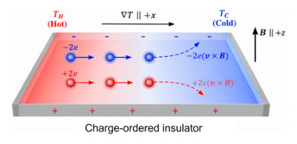
<figcaption class="paper-figure-caption"><b>Fig 1.</b> FIG. 1. Schematic of the bichargon Hall effect in a charge- ordered insulator. Two branches of bichargons carrying oppo- site electric charges ±2e diffuse in the same direction without generating a net longitudinal charge current under an applied temperature gradient, while an out-of-plane magnetic field de- flects them in opposite transverse directions via the Lorentz force, leading to a finite Hall charge current and thereby op- posite charge accumulations at the two lateral edges.</figcaption>
</figure>
<figure class="paper-figure-card">
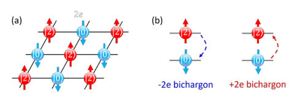
<figcaption class="paper-figure-caption"><b>Fig 2.</b> FIG. 2. (a) Checkerboard charge order in the half-filled ex- tended Hubbard model on a two-dimensional square lattice, where the alternating empty |0⟩and doubly occupied |2⟩sites can be mapped onto staggered pseudospin-1/2 order. (b) Two branches of oppositely charged (±2e) bichargons associated with pseudospin-flip excitations, analogous to the two magnon branches in a bipartite antiferromagnet carrying opposite spin angular momenta ±ℏ. The two branches of bichargon exci- tations are energetically degenerate and equally populated in equilibrium, thereby leaving the total electric charge of the system unchanged.</figcaption>
</figure>
</div>

<p><strong>Summary.</strong> This work predicts a novel bosonic charge Hall effect in charge-ordered insulators, mediated by collective excitations called bichargons. Unlike conventional conductors, the system remains insulating because the DC current vanishes, but a temperature gradient combined with a magnetic field generates a measurable transverse Hall charge current. This broadens the understanding of charge transport by utilizing charged bosonic quasiparticles.</p>
<p><strong>Why it may be interesting.</strong> The mechanism relies on bosonic quasiparticles (bichargons) in an insulating state, providing a novel platform for studying charge transport phenomena that bypasses the need for mobile electronic carriers, which is relevant to strongly correlated materials.</p>
<details>
<summary>Detailed structure</summary>
<p><strong>Main problem.</strong> The paper predicts a bosonic charge Hall effect in charge-ordered insulators, extending the concept of charge Hall transport beyond conventional electronic conductors.</p>
<p><strong>Main result.</strong> A finite transverse Hall charge current and edge charge accumulation can be generated by a temperature gradient and an out-of-plane magnetic field, even though the system remains electrically insulating.</p>
<p><strong>Method.</strong> The analysis uses the semi-classical Boltzmann equation applied to the bosonic excitations (bichargons) and calculates the resulting thermoelectric Hall coefficient.</p>
<p><strong>Model / system.</strong> The system is a charge-ordered insulator modeled using the extended Hubbard model on a 2D square lattice. The key excitations are bichargons, bosonic quasiparticles carrying quantized charges of $\pm 2e$.</p>
<p><strong>Key observables.</strong> Finite Hall charge current, opposite charge accumulations at sample edges, and the Hall thermoelectric coefficient ($L_{bH}$).</p>
<p><strong>Important parameters / regimes.</strong> Temperature gradient ($
abla T$), out-of-plane magnetic field ($B$), and the temperature regime $\Delta_b \lesssim k_B T \ll E_g$.</p>
<p><strong>Assumptions / limitations.</strong> The analysis employs the relaxation-time approximation for the Boltzmann equation and assumes the bichargon gap ($\Delta_b$) is significantly smaller than the electronic gap ($E_g$).</p>
<p><strong>Figures summary.</strong> Figure 1 schematically illustrates the effect: $
abla T$ drives diffusion, and $B$ causes opposite transverse deflection of $\pm 2e$ bichargons, leading to a finite Hall current. Figure 2 shows the checkerboard charge order and the two degenerate bichargon branches.</p>
<p><strong>Paper structure.</strong> The paper first establishes the physical model using the extended Hubbard Hamiltonian, derives the effective low-energy Hamiltonian for bichargons, and then applies the semi-classical Boltzmann equation to calculate the current response under combined thermal and magnetic fields.</p>
</details>
<details>
<summary>Abstract</summary>
<p>The conventional Hall effect arises from the transverse deflection of mobile electronic charge carriers in conductors. Here, we predict a bosonic charge Hall effect in charge-ordered insulators mediated by bichargons, collective bosonic excitations of charge order carrying quantized electric charges $\pm 2e$. In contrast to conventional electronic carriers, a thermally excited bichargon gas does not support dc electrical conduction in response to an external electric field despite its constituents carrying finite electric charges. We show that a temperature gradient can instead drive a diffusive flow of thermal bichargons, while an out-of-plane magnetic field deflects the oppositely charged bichargons in opposite transverse directions via the Lorentz force, leading to a finite Hall charge current and opposite charge accumulations at the sample edges. Our results broaden the paradigm of charge Hall transport beyond conventional electronic conductors, establishing that a charge Hall response can emerge in an electrically \emph{insulating} system through charged bosonic quasiparticles.</p>
</details>
<p><sub><a href="#top">↑ back to top</a></sub></p>

<p><a id="paper-2610.08788"></a></p>
<h3 id="chiral-central-charge-from-real-space-twist-operator-correlator"><a href="http://arxiv.org/abs/2610.08788v1">Chiral Central Charge from Real-Space Twist Operator Correlator</a></h3>
<p><strong>Authors:</strong> Yunlong Zang<br>
<strong>Type:</strong> theory · <strong>Category:</strong> strongly correlated electrons · <strong>PDF:</strong> <a href="https://arxiv.org/pdf/2610.08788v1">https://arxiv.org/pdf/2610.08788v1</a><br>
<strong>Analysis basis:</strong> full PDF text, analyzed in chunks
<strong>Topic relevance:</strong> <code>Keldysh / 2PI / non-Gaussian methods</code> <strong>2/5</strong> · <code>analog quantum simulation</code> <strong>1/5</strong></p>
<div class="figure-strip-hint">↔ Scroll figures horizontally</div>
<div class="paper-figures-scroll">
<figure class="paper-figure-card">
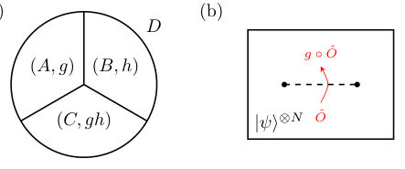
<figcaption class="paper-figure-caption"><b>Fig 1.</b> FIG. 1. Twist-operator construction. (a) A large disk A∪B∪ C is divided into three regions, and D denotes its complement. The labels specify the permutations acting in each region. (b) A twist operator supported on a closed region can be deformed to its boundary and then cut open into a twist-defect line. The endpoints (black dots) are twist defects, and the dashed line is the associated branch cut. Depending on the orientation convention, one endpoint is a g twist defect and the other is a g−1 twist defect. Crossing the cut permutes the replicas by g.</figcaption>
</figure>
<figure class="paper-figure-card">
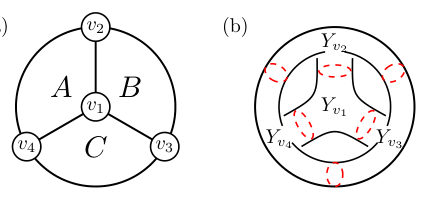
<figcaption class="paper-figure-caption"><b>Fig 2.</b> FIG. 2. (a) Tripartite region ABC with the four triple points v1, v2, v3, v4. The black lines are the entanglement cuts of this tripartite geometry. (b) The genus-three entangling surface Y is further cut into four three-punctured spheres Yv (v = v1, v2, v3, v4).</figcaption>
</figure>
<figure class="paper-figure-card">
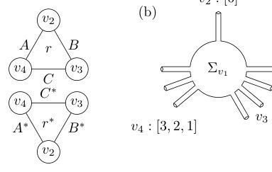
<figcaption class="paper-figure-caption"><b>Fig 3.</b> FIG. 3. (a) The replica Y (r) v1 is cut into bra and ket sheets, where the replica index is r = 1, 2, . . . , N. (b) For the example permutations in Eq. (9), Σv1 is an eight-punctured sphere. The eight punctures are divided into three groups given by the preimages of v2, v3, and v4, which are connected to Σv2, Σv3, and Σv4 by long cylinders. The ramification indices are specified by the cycle types of the relative permutations [gAB], [gBC], and [gAC].</figcaption>
</figure>
<figure class="paper-figure-card">
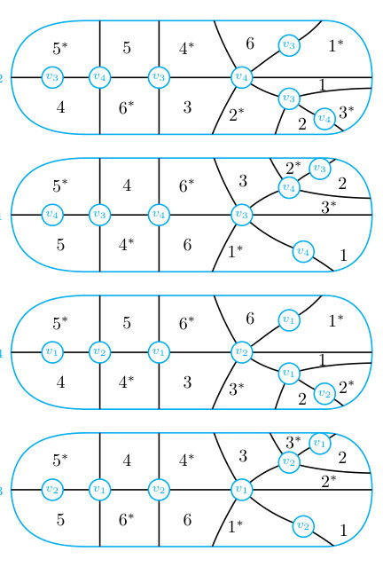
<figcaption class="paper-figure-caption"><b>Fig 4.</b> FIG. 4. The four surfaces Σv for gA = (23)(46), gB = (136)(45), and gC = (123456), with cycle counts 4, 3, and 1, respectively. The relative permutations determine the ram- ification indices and have cycle types [gAB] = [gCD] = [6], [gBC] = [gAD] = [2, 2, 1, 1], and [gAC] = [gBD] = [3, 2, 1].</figcaption>
</figure>
<figure class="paper-figure-card">
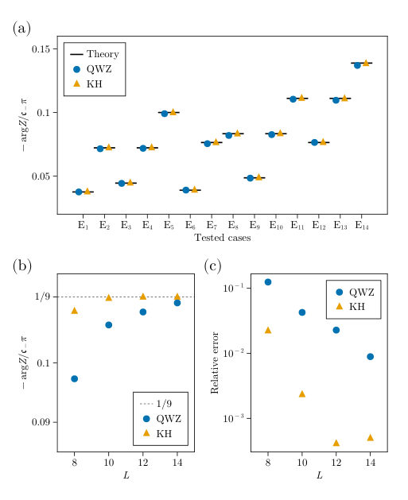
<figcaption class="paper-figure-caption"><b>Fig 5.</b> FIG. 5. Numerical test of Eq. (2). (a) −arg Zg,h/(c−π) for 14 spherical pairs (g, h) = (gA, gB), five in S5 (E1–E5) and nine in S6 (E6–E14), computed in the QWZ (circles) and KH (triangles) models; solid lines mark the theoretical prediction. The explicit permutations (gA, gB, gC) of each case are listed in the Supplemental Material [32]. (b) Finite-size behavior of −arg Zg,h/(c−π) for the S6 example of Eq. (9), obtained on 2L2 lattice sites with L = 8, 10, 12, 14; the dashed line marks the predicted value 1/9. (c) Relative error of the data in (b) with respect to 1/9.</figcaption>
</figure>
</div>

<p><strong>Summary.</strong> This work establishes a universal, real-space formula connecting the chiral central charge ($c_{-}$) of 2D gapped quantum systems to the phase of a twist-operator correlator. By analyzing the correlator on lattice models like the QWZ and Kitaev honeycomb systems, the authors provide a systematic, measurable diagnostic tool for characterizing chiral topological phases directly on a lattice.</p>
<p><strong>Why it may be interesting.</strong> It provides a concrete, lattice-based diagnostic tool to measure a fundamental topological invariant ($c_{-}$) using entanglement structures, which is highly relevant for characterizing topological phases in condensed matter systems.</p>
<details>
<summary>Detailed structure</summary>
<p><strong>Main problem.</strong> To derive a universal, real-space formula for the chiral central charge ($c_{-}$) in two-dimensional gapped quantum systems.</p>
<p><strong>Main result.</strong> The phase of the twist-operator correlator, $Z_{g,h}$, is shown to be determined by the chiral central charge via the relation $rac{Z_{g,h}}{|Z_{g,h}|} = \left(rac{   heta_g  heta_h}{    heta_{gh}}
ight)^{c_{-}}$.</p>
<p><strong>Method.</strong> The derivation uses a field-theoretic framework applied to the twist-operator correlator, which is interpreted as a partition function on a constructed surface $\Sigma$.</p>
<p><strong>Model / system.</strong> The theory applies to 2D gapped quantum systems, tested using microscopic lattice models such as the free-fermion Qi-Wu-Zhang (QWZ) model and the Kitaev honeycomb (KH) model.</p>
<p><strong>Key observables.</strong> Chiral central charge ($c_{-}$), twist-operator correlator phase ($\arg Z_{g,h}$), and topological spin ($    heta_g$).</p>
<p><strong>Important parameters / regimes.</strong> The spherical condition on permutations $(g, h)$, and the system size $N$ (number of replicas).</p>
<p><strong>Assumptions / limitations.</strong> The derivation relies on suitable assumptions within the field-theoretic framework, and the formula is noted to be conjectural for interacting systems.</p>
<p><strong>Figures summary.</strong> Figures illustrate the twist-operator construction on surfaces (A, B, C) and the construction of the associated genus-three entangling surface $\Sigma$. Numerical results show convergence to predicted values for specific lattice models.</p>
<p><strong>Paper structure.</strong> The paper first introduces the problem and the correlator. It then develops the field-theoretic machinery, analyzes the topological constraints via the spherical condition, and finally applies the derived formula to calculate $c_{-}$ for specific free-fermion and Majorana lattice models.</p>
</details>
<details>
<summary>Abstract</summary>
<p>Recent years have witnessed substantial progress in the entanglement-based characterization of quantum phases of matter, with growing interest in real-space formulas due to their theoretical and experimental relevance. For two-dimensional gapped quantum systems, we propose a universal real-space formula for the chiral central charge based on the twist-operator correlator $Z_{g,h}=\langleψ^{(N)}\rvert\mathcal{T}_A(g)\mathcal{T}_B(h)\mathcal{T}_C(g)\mathcal{T}_C(h)\lvertψ^{(N)}\rangle$, where $\lvertψ^{(N)}\rangle=\lvertψ\rangle^{\otimes N}$ is the $N$-copy state and $g,h\in S_N$ are permutations. The twist operator $\mathcal{T}_R(g)$ permutes the $N$ replicas within region $R$ according to $g$. For pairs $(g,h)$ satisfying the spherical condition, we show that the phase of the correlator is determined by the chiral central charge $\mathfrak{c}_{-}$ through $Z_{g,h}/\left\lvert Z_{g,h}\right\rvert=(θ_gθ_h/θ_{gh})^{\mathfrak{c}_{-}}$, where $θ_g^{\mathfrak{c}_{-}}$ is the topological spin of the twist defect labeled by $g\in S_N$. The construction applies to both bosonic and fermionic systems. We derive the formula within a field-theoretic framework under suitable assumptions and further test it numerically in microscopic lattice models. Our results establish a universal connection between real-space entanglement structures and the chiral central charge, providing a systematic framework for characterizing chiral topological phases directly on the lattice.</p>
</details>
<p><sub><a href="#top">↑ back to top</a></sub></p>

<p><a id="paper-2610.07656"></a></p>
<h3 id="luttinger-liquid-behavior-in-a-single-layer-nickelate-la14sr06nio4"><a href="http://arxiv.org/abs/2610.07656v1">Luttinger Liquid Behavior in a Single-Layer Nickelate La1.4Sr0.6NiO4</a></h3>
<p><strong>Authors:</strong> Yinqi Hu, Yidian Li, Xian Du, Wenxuan Zhao, Kaiyi Zhai, Senyao Zhang, Jiawei Shao, Mingxin Mao, Houke Chen, Jieyi Liu, Donghui Lu, Makoto Hashimoto, Fangyuan Zhu, Zhengtai Liu, Dawei Shen, Yaobo Huang, Zhongkai Liu, D. Prabhakaran, Yanpeng Qi, Yilin Wang, Yulin Chen, Lexian Yang<br>
<strong>Type:</strong> both · <strong>Category:</strong> strongly correlated electrons · <strong>PDF:</strong> <a href="https://arxiv.org/pdf/2610.07656v1">https://arxiv.org/pdf/2610.07656v1</a><br>
<strong>Analysis basis:</strong> full PDF text, analyzed in chunks
<strong>Topic relevance:</strong> <code>analog quantum simulation</code> <strong>2/5</strong> · <code>Keldysh / 2PI / non-Gaussian methods</code> <strong>1/5</strong></p>
<div class="figure-strip-hint">↔ Scroll figures horizontally</div>
<div class="paper-figures-scroll">
<figure class="paper-figure-card">
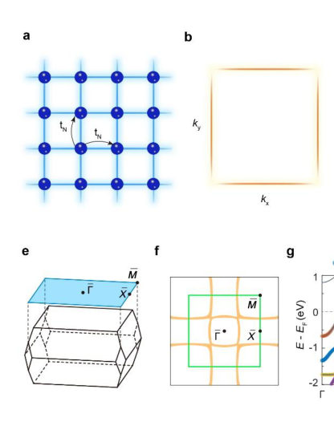
<figcaption class="paper-figure-caption"><b>Fig 1.</b> Figure 1. Basic properties of La1.4Sr0.6NiO4. a, Schematic illustration of a square lattice</figcaption>
</figure>
<figure class="paper-figure-card">
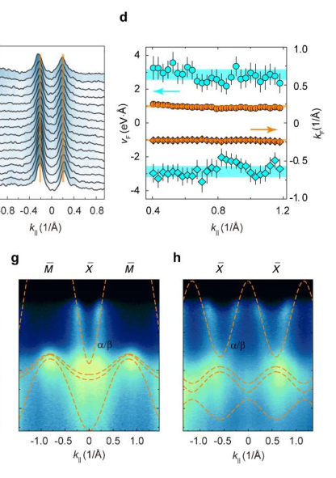
<figcaption class="paper-figure-caption"><b>Fig 2.</b> Figure 2. Basic electronic structure of La1.4Sr0.6NiO4. a, Stacking plot of constant-energy</figcaption>
</figure>
<figure class="paper-figure-card">
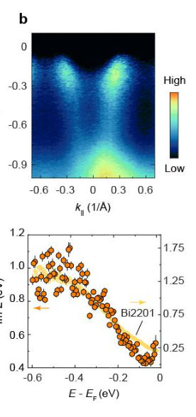
<figcaption class="paper-figure-caption"><b>Fig 3.</b> Figure 3. Electron correlation effect of La1.4Sr0.6NiO4. a, b, Band dispersions along 𝑋̅𝑀̅ and</figcaption>
</figure>
<figure class="paper-figure-card">
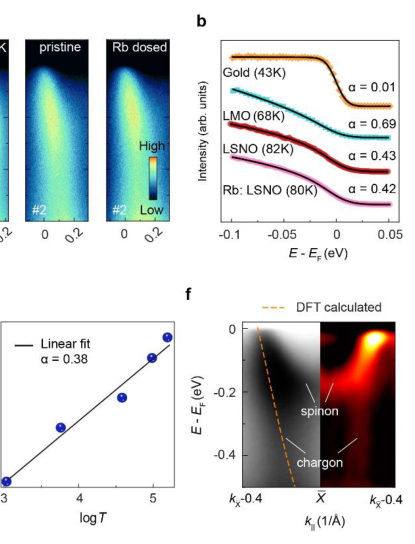
<figcaption class="paper-figure-caption"><b>Fig 4.</b> Figure 4. Non-Fermi liquid behavior of La1.4Sr0.6NiO4. a, ARPES measurements of the band</figcaption>
</figure>
</div>

<p><strong>Summary.</strong> This work investigates the single-layer nickelate $    ext{La}<em 0.6>{1.4}   ext{Sr}</em>_4$ to probe its intrinsic electronic properties. Using ARPES and advanced theory, the authors reveal that the material exhibits quasi-1D electronic behavior, leading to Luttinger liquid physics. This finding offers a crucial, simplified model for understanding the complex correlation physics in higher-dimensional superconducting nickelates.}   ext{NiO</p>
<p><strong>Why it may be interesting.</strong> The observation of Luttinger liquid physics in a quasi-2D cuprate/nickelate platform provides a strong analogy to 1D quantum systems, which is highly relevant for understanding emergent quantum phases in strongly correlated materials.</p>
<details>
<summary>Detailed structure</summary>
<p><strong>Main problem.</strong> To isolate and understand the intrinsic electronic physics of the single-layer $  ext{NiO}_2$ layer in nickelates, separating it from complications arising from interlayer coupling in multi-layer superconductors.</p>
<p><strong>Main result.</strong> The single-layer nickelate exhibits quasi-one-dimensional electronic structure leading to non-Fermi liquid behavior consistent with the Luttinger liquid model, evidenced by power-law spectral functions and spin-charge separation.</p>
<p><strong>Method.</strong> The study combines high-resolution Angle-Resolved Photoemission Spectroscopy (ARPES) measurements with advanced theoretical calculations like DFT+DMFT.</p>
<p><strong>Model / system.</strong> The physical system is the single-layer nickelate $ ext{La}<em 0.6>{1.4}   ext{Sr}</em>_4$. The theoretical framework involves modeling strong electron correlations using Hubbard-type Hamiltonians and calculating the electron self-energy.}   ext{NiO</p>
<p><strong>Key observables.</strong> Band dispersions, Fermi surface topology (straight segments), power-law spectral function, spin-charge separation signatures, and the Luttinger liquid anomalous exponent ($\alpha$).</p>
<p><strong>Important parameters / regimes.</strong> Doping level ($x=0.6$), temperature range (21 K to 185 K), and the correlation strength parameterized by $U$ and $J_H$.</p>
<p><strong>Assumptions / limitations.</strong> The analysis assumes that the quasi-1D nature of the Fermi surface dictates the low-energy physics, allowing for a Luttinger liquid description.</p>
<p><strong>Figures summary.</strong> Figures detail ARPES results showing parallel line segments for the Fermi surface, band dispersions exhibiting kinks, and plots demonstrating the temperature dependence consistent with LL scaling.</p>
<p><strong>Paper structure.</strong> The paper systematically presents ARPES data to establish the quasi-1D nature of the electronic structure, uses theoretical calculations (DFT+DMFT) to model correlation effects, and finally analyzes the temperature and doping dependence to confirm Luttinger liquid behavior.</p>
</details>
<details>
<summary>Abstract</summary>
<p>The discovery of high-temperature superconductivity in bilayer and trilayer nickelates has spurred intense interest in the Ruddlesden-Popper nickelates; yet the fundamental properties of the NiO2 layer remain obscured by interlayer coupling. It is therefore imperative to investigate the electronic properties of their single-layer counterpart to isolate the intrinsic physics of the NiO layer. In this work, we present a systematic study of the single-layer nickelate La1.4Sr0.6NiO4 using high-resolution angle-resolved photoemission spectroscopy (ARPES) and theoretical calculations. We reveal strong electron correlation effects, manifested by high-energy kinks in band dispersions and a pronounced orbital-dependent band renormalization. Interestingly, we observe a quasi-one-dimensional electronic structure characterized by straight Fermi surface sheets along the diagonal momentum directions. Such square Fermi surface topology facilitates non-Fermi liquid behavior consistent with the Luttinger liquid model, as evidenced by the power-law spectral function, robust temperature scaling, and the observation of spin-charge separation. Our results therefore not only unveil an exotic Luttinger liquid behavior emerging from the unexpected dimensional reduction in an intrinsically quasi-two-dimensional nickelate but also provide a new perspective for understanding the intriguing physics in multilayer nickelates.</p>
</details>
<p><sub><a href="#top">↑ back to top</a></sub></p>

<p><a id="paper-2610.08336"></a></p>
<h3 id="quantum-geometry-of-collective-pairing-fluctuations-in-the-superfluid-weight-of-multiband-superconductors"><a href="http://arxiv.org/abs/2610.08336v1">Quantum geometry of collective pairing fluctuations in the superfluid weight of multiband superconductors</a></h3>
<p><strong>Authors:</strong> R. N. Kalkan, M. Iskin<br>
<strong>Type:</strong> theory · <strong>Category:</strong> other · <strong>PDF:</strong> <a href="https://arxiv.org/pdf/2610.08336v1">https://arxiv.org/pdf/2610.08336v1</a><br>
<strong>Analysis basis:</strong> full PDF text, analyzed in chunks
<strong>Topic relevance:</strong> <code>Keldysh / 2PI / non-Gaussian methods</code> <strong>2/5</strong> · <code>analog quantum simulation</code> <strong>1/5</strong></p>
<div class="figure-strip-hint">↔ Scroll figures horizontally</div>
<div class="paper-figures-scroll">
<figure class="paper-figure-card">
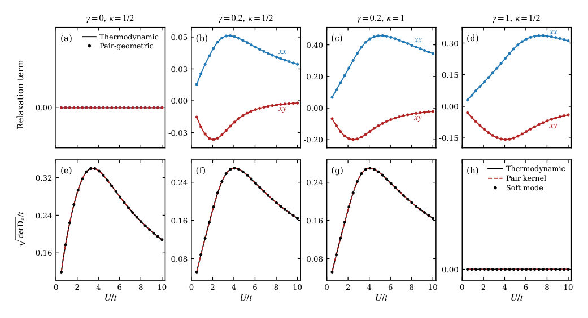
<figcaption class="paper-figure-caption"><b>Fig 1.</b> FIG. 1. Numerical benchmark at T = 0 as a function of the interaction strength U/t. The upper row, panels (a)–(d), compares the thermodynamic and pair-geometric representations of the relaxation term, shown in units of t. Solid lines show the components of F† iH(0)Fj obtained from the self-consistent gap response, while filled circles show the stiffness-weighted pair quantum metric of Eq. (37). Blue and red denote the xx and xy components, respectively. The lower row, panels (e)–(h), shows √det Ds/t obtained from the thermodynamic formulation (black solid lines), the pair-fluctuation-kernel formulation (red dashed lines), and the curvature of λ0(Q) (black filled circles) according to Eq....</figcaption>
</figure>
</div>

<p><strong>Summary.</strong> This theoretical work derives the superfluid weight for multiband superconductors by identifying a quantum-geometric correction stemming from pairing fluctuations. It rigorously proves the equivalence between thermodynamic calculations and those derived from the effective action, showing that the superfluid weight is dictated by the curvature of the pairing field manifold. This provides a deep, geometric understanding of superconducting response properties.</p>
<p><strong>Why it may be interesting.</strong> The geometric interpretation of the superfluid weight, linking it to the curvature of the pairing manifold, provides a powerful, universal framework for understanding superconducting response beyond simple mean-field treatments.</p>
<details>
<summary>Detailed structure</summary>
<p><strong>Main problem.</strong> The paper determines the superfluid weight of multiband superconductors, focusing on a quantum-geometric correction arising from the self-consistent relaxation of pairing amplitudes under a phase twist.</p>
<p><strong>Main result.</strong> The superfluid weight is shown to be determined by the small-momentum curvature of the eigenvalue branch evolving from the Goldstone mode, and this geometric correction is equivalent to the Ginzburg-Landau gradient coefficient.</p>
<p><strong>Method.</strong> The analysis uses a combination of thermodynamic potential minimization (saddle-point equations) and effective action formalism to calculate the curvature of the pairing response along the self-consistent solution.</p>
<p><strong>Model / system.</strong> The system is a multiband superconductor modeled using an attractive multiband Hubbard model. The analysis is performed at the mean-field level, considering the pairing field $\Psi$ and its response to a phase twist $q$.</p>
<p><strong>Key observables.</strong> Superfluid weight tensor ($V_{Ds}$), Ginzburg-Landau gradient coefficient (coherence-length tensor), and the pair-mass tensor.</p>
<p><strong>Important parameters / regimes.</strong> Temperature ($T$), phase twist momentum ($q$), and the Hubbard interaction strength ($U$).</p>
<p><strong>Assumptions / limitations.</strong> The analysis is performed at the mean-field level, and the derivation relies on the assumption that gauge invariance relates a phase twist to a finite center-of-mass momentum.</p>
<p><strong>Figures summary.</strong> Figure 1 compares the superfluid weight calculated using three different methods, confirming their agreement and demonstrating the cancellation of spurious terms in the disconnected limit.</p>
<p><strong>Paper structure.</strong> The paper develops the calculation by first defining the thermodynamic potential $\Omega_0(q, \Delta, \Delta^*)$ and finding the self-consistent solution $\Delta_0(q)$. It then derives the superfluid weight from the curvature of $\Omega(q)$, comparing this result to calculations based on the effective action and fluctuation kernel, and finally proving the equivalence of these formulations.</p>
</details>
<details>
<summary>Abstract</summary>
<p>Beyond the frozen-pairing contribution, the superfluid weight of a multiband superconductor contains a correction from the self-consistent relaxation of the pairing amplitudes under a phase twist. We show that this correction has a quantum-geometric origin, not in the space of Bloch states but in the space of collective pairing fields. For an attractive multiband Hubbard model at the mean-field level, the thermodynamic Hessian governing the pairing response coincides with the static Gaussian pair-fluctuation kernel at zero momentum at every temperature below $T_c$. Since gauge invariance relates a phase twist to a finite center-of-mass momentum of the pair field, the superfluid weight is set by the small-momentum curvature of the eigenvalue branch that evolves from the Goldstone mode, and the relaxation correction is a stiffness-weighted quantum metric of the corresponding soft eigenvector on the manifold of pairing configurations. The same construction yields the Ginzburg-Landau gradient coefficient with the identical geometric correction, hence the coherence-length tensor, and, with the low-frequency dynamics of the kernel, the pair-mass tensor. Lieb-lattice calculations verify the equivalence of the thermodynamic, fluctuation-kernel, and soft-mode formulations and the independence of the superfluid weight from the orbital embedding.</p>
</details>
<p><sub><a href="#top">↑ back to top</a></sub></p>

<p><a id="paper-2610.08727"></a></p>
<h3 id="entanglement-manipulation-and-magic-area-laws"><a href="http://arxiv.org/abs/2610.08727v1">Entanglement manipulation and magic area-laws</a></h3>
<p><strong>Authors:</strong> Rafael A. Macedo, Rafael Chaves<br>
<strong>Type:</strong> theory · <strong>Category:</strong> strongly correlated electrons · <strong>PDF:</strong> <a href="https://arxiv.org/pdf/2610.08727v1">https://arxiv.org/pdf/2610.08727v1</a><br>
<strong>Analysis basis:</strong> full PDF text, analyzed in chunks
<strong>Topic relevance:</strong> <code>analog quantum simulation</code> <strong>2/5</strong></p>
<div class="figure-strip-hint">↔ Scroll figures horizontally</div>
<div class="paper-figures-scroll">
<figure class="paper-figure-card">
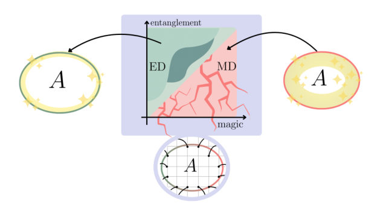
<figcaption class="paper-figure-caption"><b>Fig 1.</b> FIG. 1. Area-law states, illustrated at the bottom as quantum states with entanglement bounded by the perimeter of a subsystem A (with dangling bonds corresponding to fictitious Bell pairs) , can be classified into entanglement-dominated (ED) and magic-dominated (MD) phases, depending on the relative magnitude of their bipartite entanglement and non-stabilizerness (magic). On the left, we show that all ED area-law states exhibit an area-law for the stabilizer R´enyi entropy. On the right, we illustrate that any state with a strictly faster-than-area growth of stabilizer entropy must belong to the MD phase. This dichotomy motivates a refined notion of quantum phases, where ED states share...</figcaption>
</figure>
<figure class="paper-figure-card">
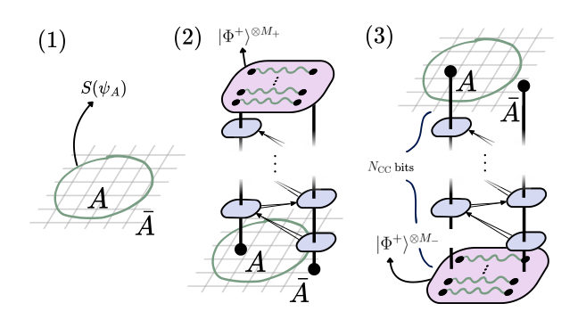
<figcaption class="paper-figure-caption"><b>Fig 2.</b> FIG. 2. The three information-theoretic tasks on which entanglement-dominated states admit quantum algorithms that are both time- and sample-efficient, while magic-dominated states, even if they are area-law, do not. (1) entanglement estimation, with the task of estimating the entanglement entropy between the bipartition defined by the region; (2) distillation, which seeks to extract Bell pairs from LOCC operations on the bipartition; (3) dilution, where the task is to build the target state from Bell pairs under LOCC with bounded communication complexity.</figcaption>
</figure>
</div>

<p><strong>Summary.</strong> This work classifies quantum states based on whether their entanglement or non-stabilizerness (magic) dominates the scaling behavior. It shows that area-law states fall into two classes: ED (efficiently manipulable) or MD (computationally hard to manipulate). This provides a fundamental resource theory for characterizing the complexity of quantum ground states in local Hamiltonians.</p>
<p><strong>Why it may be interesting.</strong> The distinction between entanglement and magic resources provides a powerful, quantifiable tool to characterize the complexity of quantum ground states, which is central to understanding many-body physics in condensed matter systems.</p>
<details>
<summary>Detailed structure</summary>
<p><strong>Main problem.</strong> The paper classifies quantum states, particularly those exhibiting area-law scaling, based on the relative scaling of bipartite entanglement versus non-stabilizerness ('magic'). It seeks to understand the computational implications of this dichotomy.</p>
<p><strong>Main result.</strong> Area-law states split into Entanglement-Dominated (ED) and Magic-Dominated (MD) classes; ED states allow for efficient entanglement manipulation, while MD states do not, suggesting typical ground states might be computationally hard.</p>
<p><strong>Method.</strong> The analysis uses information-theoretic measures like entanglement entropy and stabilizer Rényi entropy, comparing their scaling behavior under the action of finite-depth quantum circuits.</p>
<p><strong>Model / system.</strong> The study focuses on quantum states $|\psi
angle$ defined on a lattice, often related to ground states of geometrically-local Hamiltonians $H = \sum_{X} h_X$. The analysis extends to states evolved by quantum circuits.</p>
<p><strong>Key observables.</strong> Bipartite entanglement entropy ($S_\alpha$), Stabilizer Rényi Entropy ($M_\alpha$), and the state nullity ($
u$).</p>
<p><strong>Important parameters / regimes.</strong> Area law scaling ($O(|\partial A|)$), circuit depth ($t$), and the dimensionality of the lattice ($D$).</p>
<p><strong>Assumptions / limitations.</strong> The analysis assumes geometrically-local Hamiltonians and gapped ground states, and later relies on the assumption of constant gate locality for circuit evolution.</p>
<p><strong>Figures summary.</strong> Figure 1 illustrates the ED/MD classification for area-law states, showing ED states obey an area-law for stabilizer Rényi entropy, while MD states show faster-than-area growth.</p>
<p><strong>Paper structure.</strong> The paper establishes the area-law constraint, introduces the ED/MD dichotomy based on resource scaling, proves that area-law states inherit this dichotomy, and finally analyzes how quantum circuit evolution preserves or changes this classification.</p>
</details>
<details>
<summary>Abstract</summary>
<p>Physical many-body quantum systems typically interact locally, giving rise to ground states where entanglement grows with the area of the region being probed. Beyond entanglement, non-stabilizerness (or "magic") has been established as another crucial resource linked to quantum complexity and the properties of error-correcting states. Unlike entanglement, non-stabilizerness typically behaves with a volume-law scaling in ground states, indicating inherent computational complexity. In this work, we show that under a recent classification of quantum states, area-law states split into two distinct classes. Entanglement-dominated states obey an area-law for non-stabilizerness and admit efficient quantum algorithms for entanglement manipulation. Conversely, magic-dominated states exhibit a a faster-than-area growth of subsystem non-stabilizerness and require non-efficient algorithms for entanglement manipulation tasks. Within this context, we introduce the concept of the stabilizer regime, a restricted quantum phase that admits efficient entanglement manipulation and hosts area laws for both magic and entanglement.</p>
</details>
<p><sub><a href="#top">↑ back to top</a></sub></p>

<p><a id="paper-2610.08749"></a></p>
<h3 id="no-disturbance-without-uncertainty-generates-the-quantum-set-in-the-simplest-bell-scenario"><a href="http://arxiv.org/abs/2610.08749v1">No-Disturbance-without-Uncertainty generates the Quantum set in the simplest Bell scenario</a></h3>
<p><strong>Authors:</strong> Ravishankar Ramanathan<br>
<strong>Type:</strong> theory · <strong>Category:</strong> quantum information and computing · <strong>PDF:</strong> <a href="https://arxiv.org/pdf/2610.08749v1">https://arxiv.org/pdf/2610.08749v1</a><br>
<strong>Analysis basis:</strong> full PDF text, analyzed in chunks
<strong>Topic relevance:</strong> <code>quantum measurements</code> <strong>2/5</strong></p>
<div class="figure-strip-hint">↔ Scroll figures horizontally</div>
<div class="paper-figures-scroll">
<figure class="paper-figure-card">
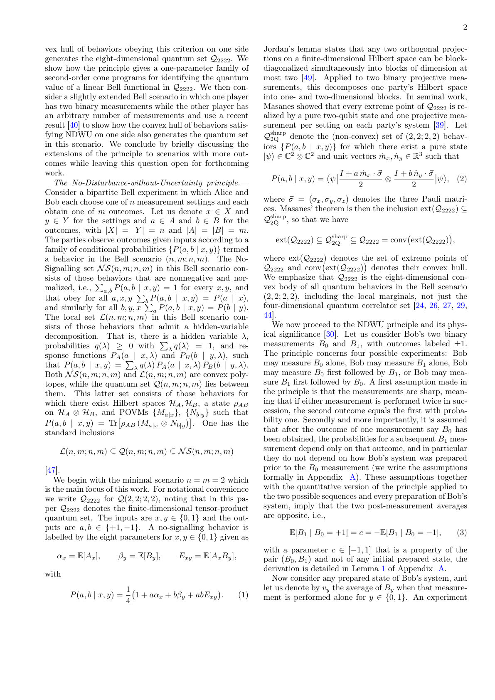
<figcaption class="paper-figure-caption"><b>Fig 1.</b> Low-resolution page preview, page 2</figcaption>
</figure>
<figure class="paper-figure-card">
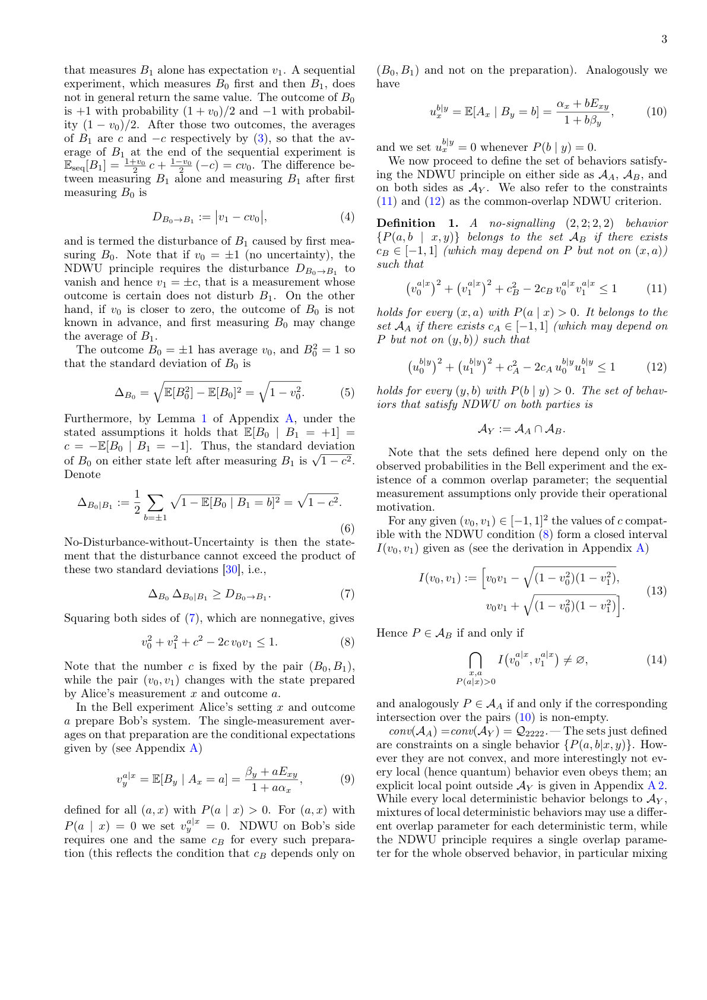
<figcaption class="paper-figure-caption"><b>Fig 2.</b> Low-resolution page preview, page 3</figcaption>
</figure>
<figure class="paper-figure-card">
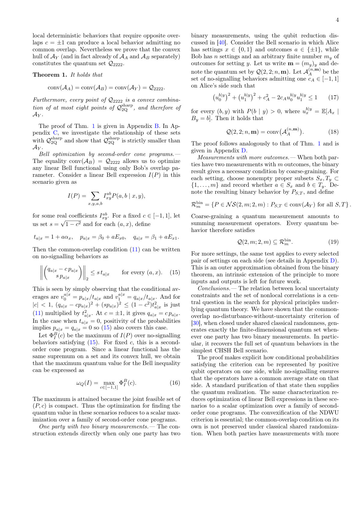
<figcaption class="paper-figure-caption"><b>Fig 3.</b> Low-resolution page preview, page 4</figcaption>
</figure>
<figure class="paper-figure-card">
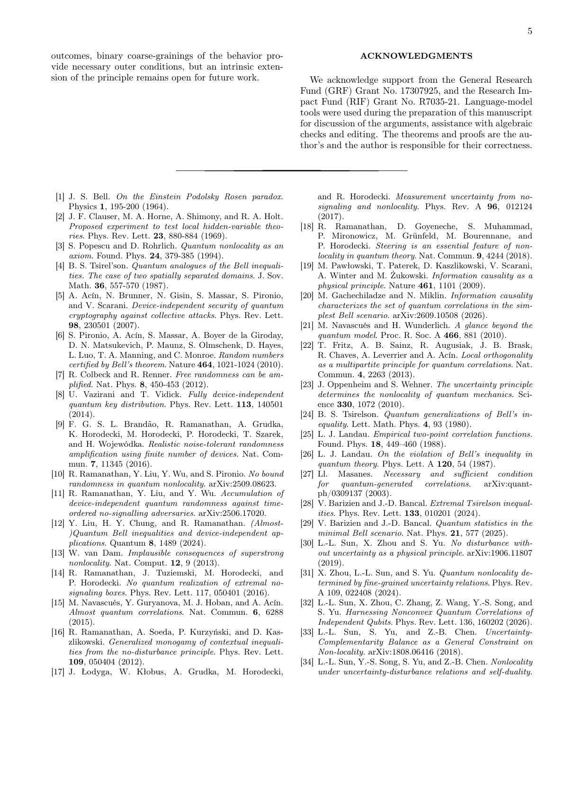
<figcaption class="paper-figure-caption"><b>Fig 4.</b> Low-resolution page preview, page 5</figcaption>
</figure>
<figure class="paper-figure-card">
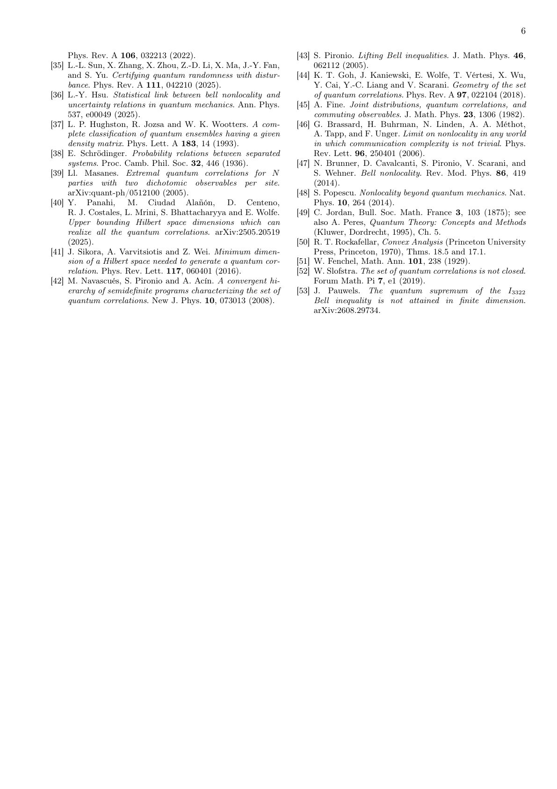
<figcaption class="paper-figure-caption"><b>Fig 5.</b> Low-resolution page preview, page 6</figcaption>
</figure>
</div>

<p><strong>Summary.</strong> This paper characterizes the set of quantum nonlocal correlations in Bell experiments by imposing the No-Disturbance-without-Uncertainty (NDWU) constraint. It proves that this information-theoretic condition is sufficient to generate the entire quantum set in the simplest Bell scenario. The methodology connects fundamental principles of measurement disturbance to the mathematical structure of quantum nonlocality.</p>
<p><strong>Why it may be interesting.</strong> This work provides a novel, physically motivated constraint (NDWU) that successfully characterizes the boundary of quantum correlations, offering a powerful tool for testing quantum foundations beyond standard Bell inequalities.</p>
<details>
<summary>Detailed structure</summary>
<p><strong>Main problem.</strong> The paper aims to characterize the set of quantum nonlocal correlations (the quantum set) using information-theoretic constraints derived from the No-Disturbance-without-Uncertainty (NDWU) principle in Bell experiments.</p>
<p><strong>Main result.</strong> The convex hull of no-signalling behaviors satisfying the NDWU condition in the simplest Bell scenario is exactly the full eight-dimensional quantum set, establishing a strong link between local uncertainty constraints and quantum nonlocality.</p>
<p><strong>Method.</strong> The authors use information-theoretic constraints, deriving conditions from the NDWU principle, and then employ techniques involving convex hulls and optimization over second-order cone programs to prove the equivalence.</p>
<p><strong>Model / system.</strong> The study focuses on bipartite Bell experiments involving two parties (Alice and Bob) performing measurements. The analysis is formalized for the simplest binary input-output scenario, and later generalized to cases with arbitrary finite settings and outcomes.</p>
<p><strong>Key observables.</strong> The correlation function $P(a, b | x, y)$, disturbance measures ($D_{B0 	o B1}$), and the resulting Bell expression values.</p>
<p><strong>Important parameters / regimes.</strong> The binary nature of the simplest case ($2 	imes 2$ inputs/outputs) and the common-overlap parameters ($c_A, c_B$) derived from the NDWU condition.</p>
<p><strong>Assumptions / limitations.</strong> The analysis assumes the existence of a quantum realization for the correlations and relies on the convexification of the constrained sets to match the quantum set.</p>
<p><strong>Figures summary.</strong> Not specified, but the text heavily references mathematical equations (e.g., Equations 3, 4, 11, 12, B25-B29, D1-D8) to build the mathematical proof.</p>
<p><strong>Paper structure.</strong> The paper progresses by defining the problem (characterizing the quantum set), introducing the NDWU constraint, proving the equivalence in the simplest binary case, and then generalizing the result to scenarios with more outcomes using coarse-graining techniques.</p>
</details>
<details>
<summary>Abstract</summary>
<p>Characterizing the set of quantum nonlocal correlations through information-theoretic constraints is a central problem in quantum foundations. We show that the convex hull of no-signalling behaviors in a bipartite Bell experiment satisfying a common-overlap no-disturbance-without-uncertainty condition is exactly the finite-dimensional quantum set whenever one party has two binary measurements and the other has an arbitrary finite number of settings, each with an arbitrary finite number of outcomes. In the simplest binary input-output Bell scenario, this characterizes the full eight-dimensional set of quantum behaviors, including the local marginals. The proof constructs a quantum realization directly from the conditional probabilities and no-signalling. The characterization also reduces optimization of any linear Bell expression in these scenarios to maximization over a one-parameter family of second-order cone programs. The results establish a connection between local uncertainty-disturbance constraints and quantum nonlocality, mediated by no-signalling and shared classical randomness.</p>
</details>
<p><sub><a href="#top">↑ back to top</a></sub></p>

<p><a id="paper-2610.08521"></a></p>
<h3 id="universal-critical-math544math-factor-for-spin-12-aharonov-bohm-bound-states"><a href="http://arxiv.org/abs/2610.08521v1">Universal critical $g$ factor for spin-1/2 Aharonov-Bohm bound states</a></h3>
<p><strong>Authors:</strong> Vinícius Salem, Edilberto O. Silva, Fabiano M. Andrade<br>
<strong>Type:</strong> theory · <strong>Category:</strong> other · <strong>PDF:</strong> <a href="https://arxiv.org/pdf/2610.08521v1">https://arxiv.org/pdf/2610.08521v1</a><br>
<strong>Analysis basis:</strong> full PDF text, analyzed in chunks
<strong>Topic relevance:</strong> <code>quantum measurements</code> <strong>2/5</strong></p>
<div class="figure-strip-hint">↔ Scroll figures horizontally</div>
<div class="paper-figures-scroll">
<figure class="paper-figure-card">
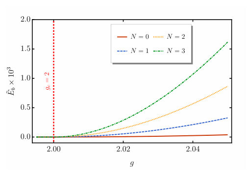
<figcaption class="paper-figure-caption"><b>Fig 1.</b> FIG. 1. Scaled binding energy ˜Eb of the singular channel as a function of g, for β = 1/2 and several flux sectors. All sectors share the threshold gc = 2, but the binding deepens with |N|.</figcaption>
</figure>
<figure class="paper-figure-card">
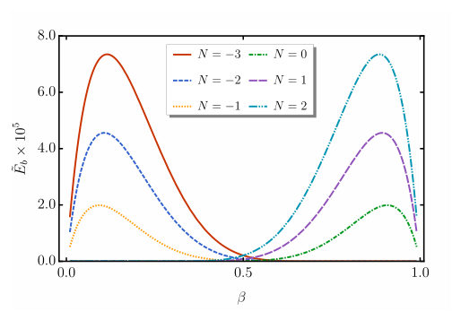
<figcaption class="paper-figure-caption"><b>Fig 2.</b> FIG. 2. Scaled binding energy ˜Eb as a function of the fractional part β of the magnetic flux for different values of N with g = ge. We can observe the symmetry between the two families for N ≥0 and N &lt; 0, which are related by β →1 −β, N →−N −1.</figcaption>
</figure>
</div>

<p><strong>Summary.</strong> This theoretical paper analyzes the bound states of a spin-1/2 particle in an Aharonov-Bohm potential, resolving a historical debate. By using self-adjoint extension theory and regularization, the authors prove that the critical magnetic g factor for binding is universally $g_c=2$. The result confirms that an anomalous magnetic moment ($g>2$) is necessary for binding in the singular interaction channel.</p>
<p><strong>Why it may be interesting.</strong> It provides a rigorous, mathematically advanced treatment of boundary conditions in quantum mechanics, directly applicable to understanding singular interactions in condensed matter or mesoscopic physics.</p>
<details>
<summary>Detailed structure</summary>
<p><strong>Main problem.</strong> The paper resolves the long-standing controversy regarding whether the spin-1/2 Aharonov-Bohm Hamiltonian supports bound states, particularly concerning the role of the anomalous magnetic moment.</p>
<p><strong>Main result.</strong> The critical magnetic g factor required for binding is found to be universal, $g_c=2$, independent of the flux sector or regularization radius. Binding requires an anomalous magnetic moment ($g>2$) in the singular channel.</p>
<p><strong>Method.</strong> The analysis employs the self-adjoint extension formalism to properly treat the singular point interaction, supplemented by a finite-radius regularization (KS approach) to determine the physical boundary conditions.</p>
<p><strong>Model / system.</strong> The system is a spin-1/2 particle interacting with a magnetic flux tube, modeled by a singular Zeeman interaction within the Aharonov-Bohm Hamiltonian framework.</p>
<p><strong>Key observables.</strong> Binding energy ($E_b$), scattering phase shift ($\delta_{
u m}$), and the critical magnetic g factor ($g_c$).</p>
<p><strong>Important parameters / regimes.</strong> The AB flux parameter ($\alpha$), the anomalous magnetic moment parameter ($g$), and the self-adjoint extension parameter ($
u$).</p>
<p><strong>Assumptions / limitations.</strong> The analysis relies on interpreting the Hamiltonian as a self-adjoint extension and uses a finite-radius regularization ($R$) to determine the physical extension parameter.</p>
<p><strong>Figures summary.</strong> Figure 2 shows the scaled binding energy ($    ilde{E}_b$) dependence on the fractional part of the flux ($eta$) for various integer flux sectors ($N$), illustrating the binding enhancement with $|N|$.</p>
<p><strong>Paper structure.</strong> The paper builds from setting up the Hamiltonian and the self-adjoint extension formalism, proceeds through scattering analysis and regularization techniques, and culminates in deriving the universal critical $g$ factor and interpreting the physical selection of the extension parameter.</p>
</details>
<details>
<summary>Abstract</summary>
<p>Whether the spin-1/2 Aharonov-Bohm Hamiltonian supports bound states has remained controversial since Hagen concluded that no such states exist for a Dirac particle. Here, we show that Hagen's solution corresponds to a particular member of the one-parameter family of self-adjoint extensions that describe the singular Zeeman interaction, and we identify which member the microscopic physics selects. Matching the extension parameter to a finite-radius flux tube yields $ν=0$ precisely at $g=2$, and it does so in every flux sector. The critical $g$ factor is therefore universal, $g_c=2$, and depends on neither the flux sector nor the regularization radius. The flux sector controls the depth of the bound state energy, and we obtain a closed-form expression showing that binding deepens markedly with the integer part of the flux. Hagen's conclusion is thus confirmed and sharpened: it is not a statement about one arbitrary member of a family of extensions, but about the member that the physics selects when the magnetic moment takes its Dirac value, and an anomalous moment is a necessary and sufficient condition for binding in the singular channel.</p>
</details>
<p><sub><a href="#top">↑ back to top</a></sub></p>

<p><a id="paper-2610.08029"></a></p>
<h3 id="spatial-density-first-passage-times-and-entropy-of-run-and-tumble-particles-in-a-bistable-potential"><a href="http://arxiv.org/abs/2610.08029v1">Spatial density, first passage times, and entropy of run and tumble particles in a bistable potential</a></h3>
<p><strong>Authors:</strong> R. K. Singh, Erez Aghion<br>
<strong>Type:</strong> theory · <strong>Category:</strong> statistical mechanics · <strong>PDF:</strong> <a href="https://arxiv.org/pdf/2610.08029v1">https://arxiv.org/pdf/2610.08029v1</a><br>
<strong>Analysis basis:</strong> full PDF text, analyzed in chunks
<strong>Topic relevance:</strong> <code>Frenkel-Kontorova</code> <strong>1/5</strong> · <code>Keldysh / 2PI / non-Gaussian methods</code> <strong>1/5</strong> · <code>correlated / nonlocal dissipation</code> <strong>1/5</strong> · <code>driven-dissipative phase transition</code> <strong>1/5</strong> · <code>methods for driven-dissipative</code> <strong>1/5</strong> · <code>non-equilibrium universality</code> <strong>1/5</strong> · <code>quantum measurements</code> <strong>1/5</strong></p>
<div class="figure-strip-hint">↔ Scroll figures horizontally</div>
<div class="paper-figures-scroll">
<figure class="paper-figure-card">
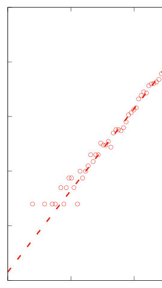
<figcaption class="paper-figure-caption"><b>Fig 1.</b> Figure 1: Steady state of a RTP in the bistable potential U(x). The parameter values are: a = 1, b = 1, r = 1, v0 = 1, and T = 1. Numerical results are obtained from the solution of the Langevin equation (1) and the analytical curves follow Eq. (17).</figcaption>
</figure>
<figure class="paper-figure-card">
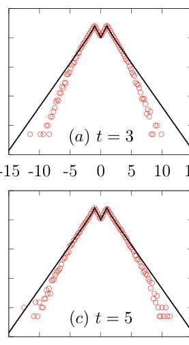
<figcaption class="paper-figure-caption"><b>Fig 2.</b> Figure 2: PDF of the RTP at different times. Red circles denote numerical estimates and the black solid line is the exact form of the steady state following Eq. (17). Parameter values are: a = 1, b = 1, r = 1, v0 = 1, and T = 1.</figcaption>
</figure>
<figure class="paper-figure-card">
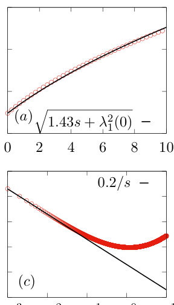
<figcaption class="paper-figure-caption"><b>Fig 3.</b> Figure 3: Small-s behavior of the eigenvalues and coefficients defining the Laplace trans- form ˜P0(x, s). Parameter values are: a = 1, b = 1, r = 1, v0 = 1, and T = 1.</figcaption>
</figure>
<figure class="paper-figure-card">
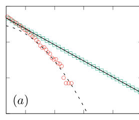
<figcaption class="paper-figure-caption"><b>Fig 4.</b> Figure 4: Relaxation behavior of the time-dependent PDF P0(x, t) at long times for (a) t = 2 and (b) t = 4. Red circles denote the numerically estimated P0(x, t) at time t, and green squares denote the steady state form. Black solid line represents the relaxed part of P0(x, t) from Eq. (31) while the black dashed lines represent the Gaussian fluctuations. Parameter values are: a = 1, b = 1, r = 1, v0 = 1, and T = 1.</figcaption>
</figure>
<figure class="paper-figure-card">
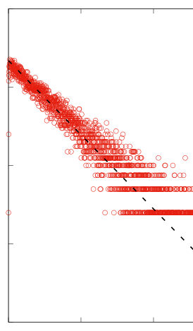
<figcaption class="paper-figure-caption"><b>Fig 5.</b> Figure 5: First passage time distribution F(t) of a RTP starting at the energy minima at x = a and crossing the energy barrier at the origin (red circles). Parameter values are: r = 1, a = 1, b = 1, T = 1/5, and v0 = 1/4. The dashed line represents the long time limit of F(t) with the time-scale τ(a) obtained from Eq. (40).</figcaption>
</figure>
</div>

<p><strong>Summary.</strong> This paper analyzes the stochastic dynamics of a particle in a bistable potential using the Fokker-Planck framework. It derives the steady-state distribution and examines relaxation dynamics in both real and Laplace space. Crucially, it contrasts the true entropy production of the full system with that of a simplified, coarse-grained Markov process, revealing the information lost during the approximation.</p>
<p><strong>Why it may be interesting.</strong> The comparison between the full system's non-zero entropy production and the coarse-grained model's zero production highlights fundamental information loss when simplifying complex stochastic dynamics, which is relevant for open quantum systems modeling.</p>
<details>
<summary>Detailed structure</summary>
<p><strong>Main problem.</strong> The study investigates the dynamics, steady-state properties, and entropy production of a Run and Tumble Particle (RTP) moving in a bistable potential coupled to a heat bath.</p>
<p><strong>Main result.</strong> The analysis derives the exact steady-state probability density function and shows that while the full dynamics exhibit non-zero entropy production, a coarse-grained Markovian description incorrectly predicts zero entropy production.</p>
<p><strong>Method.</strong> The authors employ Fokker-Planck equations, solving them analytically in Laplace space to determine time-dependent and steady-state distributions, alongside calculating entropy production rates.</p>
<p><strong>Model / system.</strong> The model is a Run and Tumble Particle (RTP) in one dimension subjected to a bistable potential $U(x)$ and thermal noise, described by a Langevin equation and coupled Fokker-Planck equations.</p>
<p><strong>Key observables.</strong> Spatial probability density function (PDF), mean first passage time, entropy production, and coarse-grained entropy.</p>
<p><strong>Important parameters / regimes.</strong> Bistable potential parameters, temperature (T), and the noise parameters ($
u_0, r$).</p>
<p><strong>Assumptions / limitations.</strong> The analysis relies on solving the FPEs in different spatial regions and assumes the coarse-graining process is valid for large barrier heights.</p>
<p><strong>Figures summary.</strong> Figures illustrate the time evolution of the PDF relaxing to steady state, and comparisons are made between analytical, numerical, and coarse-grained estimates of entropy over time.</p>
<p><strong>Paper structure.</strong> The paper proceeds by first solving the steady-state FPEs, then analyzing the time-dependent PDF using Laplace transforms, and finally comparing the full dynamics' entropy production against a simplified, coarse-grained Markovian description.</p>
</details>
<details>
<summary>Abstract</summary>
<p>We study the dynamics of a run and tumble particle (RTP) in a bistable potential, in contact with a heat bath. We find the exact form of the steady state position distribution as well as its time-dependent form in Laplace space. We use this result to study relaxation properties of the spatial probability density and find that it converges to the steady state from the center outwards, with the relaxation front moving ballistically in time. Physically this ballistic behavior arises when observing relaxation properties at the tails of the density, where the distance of the particle from the origin is larger than the length-scale describing the steady state of the RTP. We also find the exact form of the mean first passage time, and the long-time behavior of the first passage time distribution. This allows us to coarse-grain the dynamics as a dichotomous Markov process, a paradigm for a wide class of bistable processes. Coarse-graining, however, comes at the cost of a loss of information: while the RTP possesses a finite entropy production even at steady state, it identically vanishes for its coarse-grained description.</p>
</details>
<p><sub><a href="#top">↑ back to top</a></sub></p>

<p><a id="paper-2610.08005"></a></p>
<h3 id="squeezed-light-from-a-semiconductor-amplifier"><a href="http://arxiv.org/abs/2610.08005v1">Squeezed light from a semiconductor amplifier</a></h3>
<p><strong>Authors:</strong> Andrey S. Aleksandrov, Anatoly V. Masalov<br>
<strong>Type:</strong> theory · <strong>Category:</strong> other · <strong>PDF:</strong> <a href="https://arxiv.org/pdf/2610.08005v1">https://arxiv.org/pdf/2610.08005v1</a><br>
<strong>Analysis basis:</strong> full PDF text, analyzed in chunks
<strong>Topic relevance:</strong> <code>Keldysh / 2PI / non-Gaussian methods</code> <strong>1/5</strong> · <code>driven-dissipative phase transition</code> <strong>1/5</strong> · <code>interference shaping light</code> <strong>1/5</strong> · <code>methods for driven-dissipative</code> <strong>1/5</strong> · <code>quantum optics experiment</code> <strong>1/5</strong></p>
<div class="figure-strip-hint">↔ Scroll figures horizontally</div>
<div class="paper-figures-scroll">
<figure class="paper-figure-card">
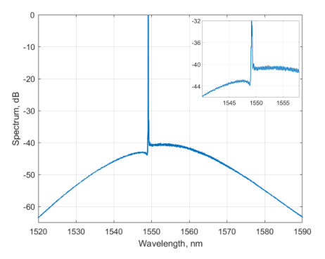
<figcaption class="paper-figure-caption"><b>Fig 1.</b> FIG. 1. The mode of single-frequency radiation against the background of multiple subthreshold modes (nearly unre- solved) of an InP laser. Insert: enlarged fragment of the spectrum. Courtesy of A. N. Danilin.</figcaption>
</figure>
<figure class="paper-figure-card">
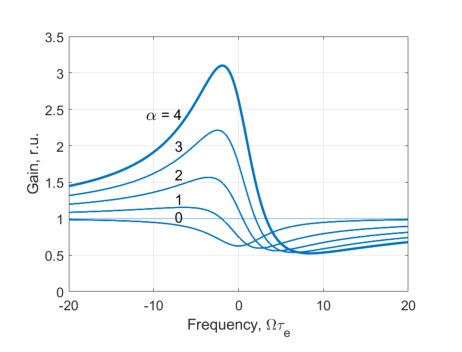
<figcaption class="paper-figure-caption"><b>Fig 2.</b> FIG. 2. The spectrum of the relative energy gain of weak modes due to FWM for input intensity S0 = 1, gain Z = 3 and different values of Henry factor α.</figcaption>
</figure>
<figure class="paper-figure-card">
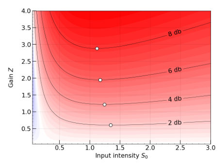
<figcaption class="paper-figure-caption"><b>Fig 3.</b> FIG. 3. Degree of squeezing ⟨∆E2⟩min depending on the input intensity S0 and gain Z, frequency Ωτe = 0.01. The circles denote the values of the minimum gain Z to achieve the spec- ified squeezing.</figcaption>
</figure>
<figure class="paper-figure-card">
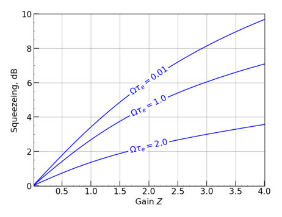
<figcaption class="paper-figure-caption"><b>Fig 4.</b> FIG. 4. Degree of squeezing ⟨∆E2⟩min depending on Z at input intensity S0 = 1.5 and various modulation frequencies Ωτe.</figcaption>
</figure>
<figure class="paper-figure-card">
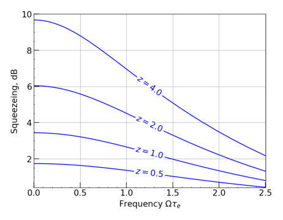
<figcaption class="paper-figure-caption"><b>Fig 5.</b> FIG. 5. Degree of squeezing ⟨∆E2⟩min depending on Ωτe at different gain Z for input intensity S0 = 1.5.</figcaption>
</figure>
</div>

<p><strong>Summary.</strong> This paper theoretically investigates generating squeezed light using a semiconductor amplifier operating in a saturated regime. It shows that the four-wave mixing process generates two-mode squeezed light in sidebands around the main amplified wave. This effect is quantifiable and can reach significant squeezing levels, demonstrating a quantum nonlinear optical process in a solid-state device.</p>
<p><strong>Why it may be interesting.</strong> This work directly bridges quantum optics (squeezing) with solid-state physics (semiconductor amplifiers), providing theoretical insights into non-linear quantum light generation in condensed matter systems.</p>
<details>
<summary>Detailed structure</summary>
<p><strong>Main problem.</strong> The paper theoretically analyzes the generation of light in a squeezed quantum state when a semiconductor amplifier operates under saturated conditions.</p>
<p><strong>Main result.</strong> The four-wave mixing process leads to the generation of two-mode squeezed light in sidebands around the strong amplified wave, with squeezing potentially reaching 10 dB or more.</p>
<p><strong>Method.</strong> The analysis involves solving coupled differential equations governing the light amplitude and carrier density, treating the side-band components as weak fields.</p>
<p><strong>Model / system.</strong> The physical system is a semiconductor amplifier medium. The model uses coupled rate equations for the carrier density and the light field amplitude, incorporating the four-wave mixing process.</p>
<p><strong>Key observables.</strong> Quadrature noise suppression ($\langle\Delta E^2
angle_{\min}$), energy gain of weak modes, and the degree of squeezing (measured in dB).</p>
<p><strong>Important parameters / regimes.</strong> Henry factor ($\alpha$), input intensity ($S$), gain length ($Z$), and the characteristic frequency shift ($\Omega \sim 1/	au_e$).</p>
<p><strong>Assumptions / limitations.</strong> The analysis assumes weak fields for the side-band components and utilizes approximations derived from solving the coupled differential equations.</p>
<p><strong>Figures summary.</strong> Figures illustrate the mode spectrum showing the Bogatov effect and the relative energy gain of weak modes due to FWM for varying Henry factors ($\alpha$).</p>
<p><strong>Paper structure.</strong> The paper progresses by setting up the governing equations, deriving the relative amplitudes for side-bands, analyzing the energy gain via FWM, and finally quantifying the minimum noise fluctuation to determine the squeezing level.</p>
</details>
<details>
<summary>Abstract</summary>
<p>The possibility of generating light in a squeezed quantum state during saturated light amplification in a semiconductor amplifier is theoretically analyzed. Due to four-wave mixing process during amplification, weak components of the spontaneous emission of the medium with symmetric frequency shifts relative to the strong amplified wave acquire the quantum properties of two-mode squeezed light. The squeezing of quadrature components occurs in the range of frequency shifts of several GHz ($\sim$ the inverse relaxation time of the charge carrier density) and can reach 10 dB or more under optimal conditions. The formation of a two-mode squeezing phase facilitates the observation of the squeezing effect, in which a strong wave, playing the role of a local wave, exhibits quadrature noise suppression without additional homodyne detection.</p>
</details>
<p><sub><a href="#top">↑ back to top</a></sub></p>

<p><a id="paper-2610.07352"></a></p>
<h3 id="classical-chaotic-signatures-in-krylov-space"><a href="http://arxiv.org/abs/2610.07352v1">Classical chaotic signatures in Krylov space</a></h3>
<p><strong>Authors:</strong> Gastón F. Scialchi, Augusto J. Roncaglia, Diego A. Wisniacki<br>
<strong>Type:</strong> theory · <strong>Category:</strong> other · <strong>PDF:</strong> <a href="https://arxiv.org/pdf/2610.07352v1">https://arxiv.org/pdf/2610.07352v1</a><br>
<strong>Analysis basis:</strong> full PDF text, analyzed in chunks
<strong>Topic relevance:</strong> <code>Keldysh / 2PI / non-Gaussian methods</code> <strong>1/5</strong> · <code>analog quantum simulation</code> <strong>1/5</strong> · <code>methods for driven-dissipative</code> <strong>1/5</strong></p>
<div class="figure-strip-hint">↔ Scroll figures horizontally</div>
<div class="paper-figures-scroll">
<figure class="paper-figure-card">
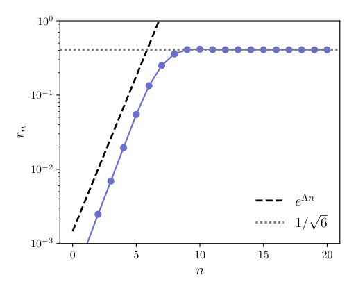
<figcaption class="paper-figure-caption"><b>Fig 1.</b> Figure 1. Second moment of the chord function [Eq. (11)] for the Krylov operators of the perturbed Arnold’s cat map [Eq. (2)] with k = 0.02. The black dashed line corresponds to exponential growth with the Lyapunov exponent Λ = ln[(3 + √</figcaption>
</figure>
<figure class="paper-figure-card">
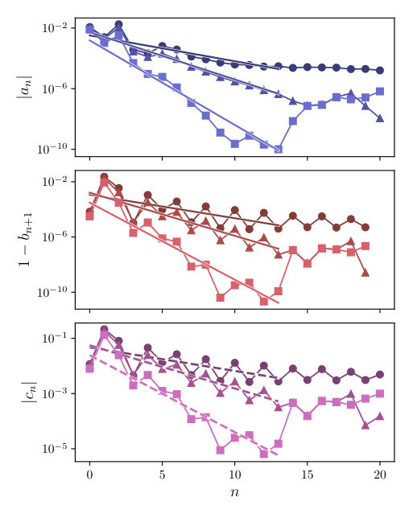
<figcaption class="paper-figure-caption"><b>Fig 2.</b> Figure 2. Arnoldi sequences [Eq. (5)] for the perturbed Arnold’s cat map [Eq. (2)] with k = 0.02 (squares), k = 0.025 (triangles) and k = 0.0275 (circles). The lines are expo- nential decays with the respective Ruelle-Pollicott resonances |λ1| = 0.526, |λ1| = 0.698 and |λ1| = 0.822 (light to dark). Solid lines are |λ1|2n, and dashed lines |λ1|n. The initial op- erator is given by Eqs. (8) and (9) with (q0, p0) = (0.2, 0.3) and σ = 0.45. A Hilbert space dimension of N = 2048 was used.</figcaption>
</figure>
</div>

<p><strong>Summary.</strong> This theoretical work connects classical chaotic signatures, such as stretching and mixing, to the mathematical structure of Krylov space for quantum maps. By analyzing observables like the Lyapunov exponent and Ruelle-Pollicott resonances through Krylov operators, the authors demonstrate that these classical concepts are encoded in the geometry and decay rates within the quantum spectral representation.</p>
<p><strong>Why it may be interesting.</strong> This work provides a powerful mathematical tool—Krylov space analysis—to diagnose fundamental physical properties like chaos and ergodicity in quantum systems, bridging semiclassical physics with spectral theory.</p>
<details>
<summary>Detailed structure</summary>
<p><strong>Main problem.</strong> The paper aims to establish a rigorous connection between the established signatures of classical chaos (exponential stretching and mixing) and their mathematical encoding within the structure of Krylov space for quantum systems.</p>
<p><strong>Main result.</strong> The Lyapunov exponent is encoded in the geometry of the Krylov operators, while dynamical mixing is manifested as the exponential decay of the Arnoldi sequences, linking classical chaos to quantum spectral properties.</p>
<p><strong>Method.</strong> The authors employ Krylov space methods, utilizing orthogonal expansions (like Arnoldi iteration) and analyzing the chord representation of the evolution operators to map classical dynamics onto quantum spectral diagnostics.</p>
<p><strong>Model / system.</strong> The analysis is applied to quantized classical maps, including the perturbed Arnold's cat map, the Harper map, and the Chirikov standard map, which serve as models for quantum chaos.</p>
<p><strong>Key observables.</strong> Lyapunov exponent ($\Lambda$), Ruelle-Pollicott resonances ($\lambda_1$), second moment of the chord function ($r_n$), and the decay rates of Arnoldi sequences.</p>
<p><strong>Important parameters / regimes.</strong> The analysis explores the transition from regular to chaotic regimes, controlled by parameters like the kicking strength ($k$) in the standard map.</p>
<p><strong>Assumptions / limitations.</strong> Key assumptions include the validity of the classical limit ($N 	o \infty$) and using specific approximations for the autocorrelation function in the non-traceless case.</p>
<p><strong>Figures summary.</strong> Figures illustrate the exponential growth of the second moment ($r_n$) matching the Lyapunov exponent, and the exponential decay of Arnoldi sequences matching the Ruelle-Pollicott resonance rates for various chaotic maps.</p>
<p><strong>Paper structure.</strong> The paper systematically analyzes the connection by first establishing the framework using the cat map, then generalizing the diagnostics (Lyapunov exponent via $r_n$, mixing via Arnoldi decay) to other canonical chaotic systems like the Harper and Standard maps, and finally detailing the role of the initial observable's trace in the decay structure.</p>
</details>
<details>
<summary>Abstract</summary>
<p>In recent years, Krylov space approaches have emerged as a useful framework for characterizing dynamical chaos in a wide variety of physical systems. However, the connection between Krylov dynamics and the established structures of classical chaos remains largely unexplored. Classical chaos is characterized by exponential stretching and mixing. For quantum maps with a classical limit, we show that these two signatures are encoded in different structures within Krylov space: stretching is encoded in the geometry of the Krylov operators as determined by the Lyapunov exponent, while mixing manifests itself as an exponential decay of the Arnoldi sequences in agreement with the Ruelle-Pollicott resonances.</p>
</details>
<p><sub><a href="#top">↑ back to top</a></sub></p>

<p><a id="paper-2610.08598"></a></p>
<h3 id="fast-free-energy-estimation-for-complex-systems-with-nonreversible-simulated-tempering"><a href="http://arxiv.org/abs/2610.08598v1">Fast free-energy estimation for complex systems with nonreversible simulated tempering</a></h3>
<p><strong>Authors:</strong> Yoshihiko Nishikawa, Koji Hukushima<br>
<strong>Type:</strong> theory · <strong>Category:</strong> disordered systems and neural networks · <strong>PDF:</strong> <a href="https://arxiv.org/pdf/2610.08598v1">https://arxiv.org/pdf/2610.08598v1</a><br>
<strong>Analysis basis:</strong> full PDF text, analyzed in chunks
<strong>Topic relevance:</strong> <code>analog quantum simulation</code> <strong>1/5</strong> · <code>methods for driven-dissipative</code> <strong>1/5</strong> · <code>scars &amp; prethermalization</code> <strong>1/5</strong></p>
<div class="figure-strip-hint">↔ Scroll figures horizontally</div>
<div class="paper-figures-scroll">
<figure class="paper-figure-card">
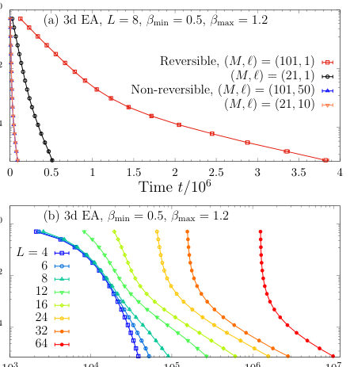
<figcaption class="paper-figure-caption"><b>Fig 1.</b> FIG. 1. Time dependence of the modification factor log f during WLST free-energy estimation. (a) Comparison be- tween the reversible and nonreversible WLST algorithms for L = 8, shown for two choices of (M, ℓ). (b) Results for the nonreversible WLST algorithm at several system sizes, with (M, ℓ) = (101, 50).</figcaption>
</figure>
<figure class="paper-figure-card">
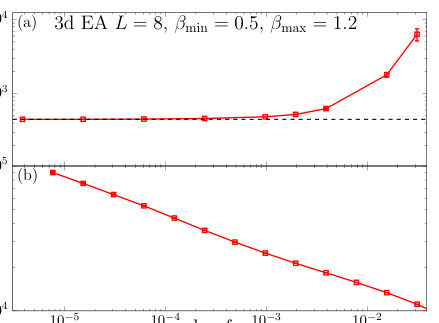
<figcaption class="paper-figure-caption"><b>Fig 2.</b> FIG. 2. (a) Round-trip time τRT measured in equilibrium ST simulations and (b) WLST simulation time tWLST re- quired to reach the terminal value log ffin, both as a function of log ffin. From these plots, τRT is given as a function of tWLST, yielding the convergence time τ WLST c with Eq. (20). The system size is L = 8 and the innverse-temperature range is (βminJ, βmaxJ) = (0.5, 1.2).</figcaption>
</figure>
<figure class="paper-figure-card">
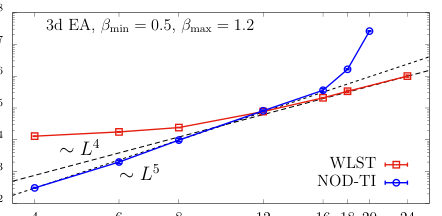
<figcaption class="paper-figure-caption"><b>Fig 3.</b> FIG. 3. Convergence time τc as a function of the system size L for the WLST and NOD-TI algorithms. The dashed and dotted lines indicate the power-law scalings L4 and L5, respectively.</figcaption>
</figure>
<figure class="paper-figure-card">
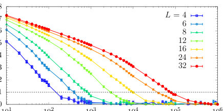
<figcaption class="paper-figure-caption"><b>Fig 4.</b> FIG. 4. Time-dependent overlap [⟨Q(t)⟩] measured along ST trajectories with fluctuating inverse temperature β, as a function of time t for several system sizes L. Each tra- jectory is initialized with an equilibrium configuration at βJ = 1.2. The horizontal dashed line indicates the thresh- old [⟨Q(τs)⟩] = 10−1 used to define the relaxation time τs.</figcaption>
</figure>
<figure class="paper-figure-card">
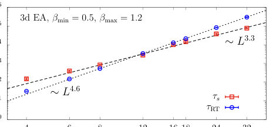
<figcaption class="paper-figure-caption"><b>Fig 5.</b> FIG. 5. Relaxation time τs and round-trip time τRT as func- tions of L. Power-law fits defined by τs ∼Lzs and τRT ∼LzRT yield the effective exponents zs ≈3.3 for τs and zRT ≈4.6 for τRT.</figcaption>
</figure>
</div>

<p><strong>Summary.</strong> This paper presents an advanced simulation technique that combines Wang-Landau principles with Simulated Tempering, utilizing nonreversible dynamics to estimate the free energy of complex systems. By applying this to the 3D spin-glass model, the authors demonstrate a significant acceleration in convergence speed compared to prior methods. This provides a powerful tool for studying phase transitions in disordered magnetic systems.</p>
<p><strong>Why it may be interesting.</strong> While focused on classical statistical mechanics, the development of efficient, non-equilibrium sampling techniques like this has parallels in quantum simulation, particularly in calculating partition functions or free energies for quantum many-body systems where sampling is notoriously difficult.</p>
<details>
<summary>Detailed structure</summary>
<p><strong>Main problem.</strong> Accurately estimating the free energy of complex physical systems, such as spin glasses, which exhibit slow dynamics and high computational barriers.</p>
<p><strong>Main result.</strong> The proposed nonreversible simulated tempering algorithm significantly accelerates free-energy convergence, allowing precise estimation for large system sizes ($L \simeq 64$) with slower scaling of convergence time compared to existing methods.</p>
<p><strong>Method.</strong> The authors generalize the Wang-Landau algorithm to Simulated Tempering (WLST), incorporating nonreversible dynamics in temperature space to efficiently sample the required ensemble.</p>
<p><strong>Model / system.</strong> The primary test case is the three-dimensional Edwards-Anderson spin-glass model, defined on a cubic lattice with Ising spins ($\sigma_i = \pm 1$) interacting via random couplings $J_{ij}$.</p>
<p><strong>Key observables.</strong> Free energy ($\phi(eta)$ or $F(eta)$), Density of States ($\Omega(E)$), and the temperature histogram flatness.</p>
<p><strong>Important parameters / regimes.</strong> System size ($L \simeq 64$), temperature range ($eta_{min}J = 0.5$ to $eta_{max}J = 1.2$), and the nonreversible dynamics parameters.</p>
<p><strong>Assumptions / limitations.</strong> The method assumes that the nonreversible dynamics can preserve the target joint distribution upon marginalization over the lifting variable, and it is noted that first-order transitions remain a limitation.</p>
<p><strong>Figures summary.</strong> Figure 1 compares the time dependence of the modification factor logarithm ($\log f$) for WLST using reversible versus nonreversible dynamics, showing the advantage of the latter.</p>
<p><strong>Paper structure.</strong> The paper introduces the challenge of free-energy estimation in complex systems, details the WLST algorithm incorporating nonreversible dynamics, applies it to the 3D EA spin-glass model, and compares its performance against established methods like NOD-TI.</p>
</details>
<details>
<summary>Abstract</summary>
<p>We discuss free-energy estimation for complex systems using simulated tempering with Wang--Landau-type feedback. We show that introducing nonreversible dynamics in temperature space and multiple temperature updates per step significantly accelerates the convergence of the free-energy estimate. We then apply the algorithm to the three-dimensional Edwards-Anderson spin-glass model. Our results show that the algorithm can precisely estimate the free energy up to a large system size $L \simeq 64$, and that subsequent equilibrium simulated tempering simulations with the estimated free energy can rapidly sample from the Boltzmann distributions over a wide temperature range that covers the spin-glass transition temperature. The convergence time of our algorithm grows much more slowly with system size than that of another known algorithm for on-the-fly free-energy estimation.</p>
</details>
<p><sub><a href="#top">↑ back to top</a></sub></p>

<p><a id="paper-2610.07422"></a></p>
<h3 id="white-paper-1-10-hz-matter-wave-interferometer-to-test-the-spin-entanglement-witness-for-quantum-gravity"><a href="http://arxiv.org/abs/2610.07422v1">White paper: 1-10 Hz matter-wave interferometer to test the spin entanglement witness for quantum gravity</a></h3>
<p><strong>Authors:</strong> Sougato Bose, Anupam Mazumdar, Marko Toroš, Tian Zhou, Tadeusz Adach, Niayesh Afshordi, Agya Sewara Alam, Alexandre Arbey, Navdeep Arya, Simon Baier, Peter F. Barker, Angelo Bassi, Ettore Bernardi, Lorenzo Braccini, Robert Brandenberger, Daniel Braun, Guri K. Buza, Luigi Cacciapuoti, Carlo Cepollaro, Lin-Qing Chen, Yanbei Chen, Ralph Jason Costales, Marion Cromb, Álvaro de la Cruz-Dombriz, Catalina Curceanu, Shubhang Dadhich, Debarshi Das, Saurya Das, Pratika Dayal, Subhadeep De, Ema Dimastrogiovanni, Lajos Diósi, Or Dobkowski, Kemal Döner, Brian D'Urso, Gurudev Dutt, Shafaq Gulzar Elahi, Samira Elghaayda, Matteo Fadel, Samuel Fedida, Omer Feldman, Fabiano Feleppa, Ron Folman, Joshua Foo, Paolo Fragolino, Laurent Freidel, Giulio Gasbarri, Marco Genovese, Andrew Geraci, Menachem Givon, Cisco Gooding, Jonathan M. H. Gosling, Piotr T. Grochowski, David Groswasser, Mustafa Gündoğan, Ekim Taylan Hanımeli, Bas Hensen, Dipankar Home, Richard Howl, Yonathan Japha, Maciej T. Jarema, Rainer Kaltenbaek, Adrian Kent, Eva Kilian-Rademacher, M. S. Kim, Jarosław K. Korbicz, Timothy Kovachy, Samuel Kováčik, Ohkyung Kwon, Gaetano Lambiase, Naor Levi, Iarley P. Lobo, Leon Loveridge, Adrian Lupascu, Paolo Luppi, Marta Maria Marchese, Antonino Marcianò, Aaron G. Markowitz, Chiara Marletto, Ryan J Marshman, J. D. D. Martin, Florian Millo, Gavin W. Morley, Maria Muretova, Sebastian Murk, Robin Oberfrank, Daniel K. L. Oi, Jerzy Paczos, Papadopoulos Stylianos, Matteo G. A. Paris, Mauro Paternostro, Alessandro Pesci, Luciano Petruzziello, Fabrizio Piacentini, Tanmay Kumar Poddar, Sofia Qvarfort, Markus Rademacher, Dennis Rätzel, Anna Chiara Rescigno, Ryan Rizaldy, Albert Roura, Carlos Sabín, Barry C. Sanders, Martine Schut, Helen M Sheehy, Suprit Singh, Aninda Sinha, Urbasi Sinha, Peter Skakunenko, Michael E Tobar, Géza Tóth, Hendrik Ulbricht, Gislaine Varão, Vlatko Vedral, Vincent Vennin, Francesca Vidotto, Giuseppe Filiberto Vitale, Marko Vojinović, Chenan Wei, Qian Xiang, Magdalena Zych<br>
<strong>Type:</strong> theory · <strong>Category:</strong> other · <strong>PDF:</strong> <a href="https://arxiv.org/pdf/2610.07422v1">https://arxiv.org/pdf/2610.07422v1</a><br>
<strong>Analysis basis:</strong> full PDF text, analyzed in chunks
<strong>Topic relevance:</strong> <code>analog quantum simulation</code> <strong>1/5</strong> · <code>interference shaping light</code> <strong>1/5</strong> · <code>quantum measurements</code> <strong>1/5</strong></p>
<div class="figure-strip-hint">↔ Scroll figures horizontally</div>
<div class="paper-figures-scroll">
<figure class="paper-figure-card">
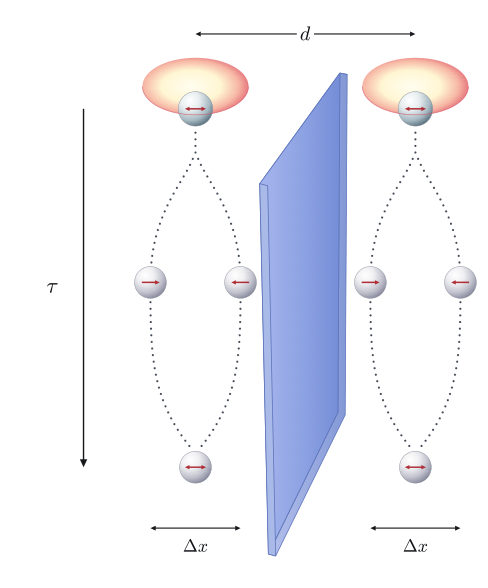
<figcaption class="paper-figure-caption"><b>Fig 1.</b> FIG. 1. Schematic representation of the linear QGEM setup [14], in which two matter-wave interferometers are arranged as shown. A parallel configuration has also been proposed [58, 85]. In the lin- ear setup, two nano-crystals with internal spins (red arrows) are ini- tially trapped, motionally cooled, and separated by a thin membrane, ideally a superconducting shield, to suppress direct electromagnetic interactions between them. The shield is assumed to be sufficiently massive to be treated classically. Residual electromagnetic interac- tions between each nano-crystal and the shield have been studied in Refs. [57, 67, 86]. Using standard radio-frequency techniques, each nano-crystal is...</figcaption>
</figure>
<figure class="paper-figure-card">
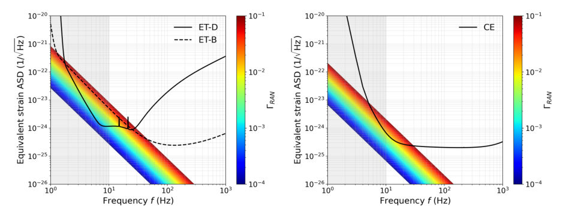
<figcaption class="paper-figure-caption"><b>Fig 2.</b> FIG. 2. The left plot shows the comparison between the QGEM acceleration-noise requirement expressed as an ET-equivalent strain and the sensitivity of Einstein Telescope with 10km baseline. The colour band shows the ET-equivalent strain ASD obtained from Eq. (13) for dephasing values 10−4 ≤ΓRAN ≤10−1, taking m = 10−14 kg, ∆x = 10 µm, and τ = 1 s. The solid black curve labelled ET-D shows the predicted strain-amplitude spectral density of the ET-D low-frequency interferometer (ET-D-LF) [82], while the dashed black curve shows the ET-B strain-amplitude spectral density [107]. The vertical grey-shaded region indicates the 1 −10 Hz frequency range considered here, motivated by the...</figcaption>
</figure>
<figure class="paper-figure-card">
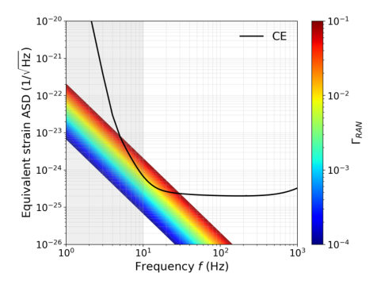
<figcaption class="paper-figure-caption"><b>Fig 3.</b> Fig. 2 summarises the key results, showing the strain ASDs of ET and CE and their overlap with the equivalent strain- noise level required for the QGEM experiment to be per- formed to witness the quantum nature of gravity in a lab. The colour-coded regions depict 10−4 ≤ΓRAN ≤10−1 in the range of 1 −10 Hz for both the gravitational wave obser- vatories. Determining favourable QGEM interrogation times requires evaluating the accumulated dephasing using the lo- cal acceleration-noise spectrum and the interferometer filter function. The different ET- and CE-equivalent curves reflect their respective baselines and strain sensitivities and provide complementary benchmarks for QGEM noise control....</figcaption>
</figure>
</div>

<p><strong>Summary.</strong> This white paper outlines a method to test quantum gravity by measuring the entanglement of masses using a matter-wave interferometer operating in the $1-10 	ext{ Hz}$ range. The core challenge is suppressing environmental noise, requiring unprecedented stability comparable to next-generation gravitational-wave detectors. It provides a theoretical roadmap for realizing quantum gravity tests using advanced atom interferometry.</p>
<p><strong>Why it may be interesting.</strong> This work bridges fundamental quantum gravity tests with cutting-edge experimental challenges in low-frequency sensing, directly connecting quantum information concepts (entanglement witnesses) to macroscopic physics and detector technology.</p>
<details>
<summary>Detailed structure</summary>
<p><strong>Main problem.</strong> The paper addresses the feasibility of using matter-wave interferometers to test the quantum nature of gravity by measuring the spin entanglement witness for quantum gravity effects.</p>
<p><strong>Main result.</strong> The required sensitivity to environmental noise, particularly relative acceleration noise, must be below $10^{-15} 	ext{ m s}^{-2}/\sqrt{	ext{Hz}}$ in the $1-10 	ext{ Hz}$ band, placing the experiment in a regime comparable to advanced gravitational-wave detectors.</p>
<p><strong>Method.</strong> The analysis involves theoretical modeling of the Quantum Gravity-Induced Entanglement of Masses (QGEM) protocol using matter-wave interferometry.</p>
<p><strong>Model / system.</strong> The system is a matter-wave interferometer designed to maintain spatial superpositions ($\Delta x \sim 1-20 \mu	ext{m}$) and coherence ($   au \sim 0.1-1   ext{ s}$) using masses ($m \sim 10^{-15}-10^{-14}  ext{ kg}$).</p>
<p><strong>Key observables.</strong> The spin entanglement witness, phase difference ($\Delta\phi$), and sensitivity to Relative Acceleration Noise (RAN) and Gravity-Gradient Noise (GGN).</p>
<p><strong>Important parameters / regimes.</strong> Frequency range of $1-10 	ext{ Hz}$; required noise suppression below $10^{-15} 	ext{ m s}^{-2}/\sqrt{	ext{Hz}}$; mass $m=10^{-14} 	ext{ kg}$.</p>
<p><strong>Assumptions / limitations.</strong> The protocol assumes standard quantum mechanics and general relativity, and the primary limitation is environmental noise suppression.</p>
<p><strong>Paper structure.</strong> The paper introduces the QGEM protocol, details the experimental requirements for the interferometer (mass, separation, coherence), analyzes the dominant low-frequency noise sources (RAN, GGN), and compares the necessary noise suppression levels to those targeted by large-scale gravitational-wave observatories like ET and CE.</p>
</details>
<details>
<summary>Abstract</summary>
<p>In this white paper, we highlight the importance of the ($1-10~{\rm Hz}$) frequency range for laboratory tests of the quantum nature of gravity using the quantum gravity-induced entanglement of masses (QGEM) protocol. QGEM requires matter-wave interferometers with masses ($m\sim10^{-15}-10^{-14}~{\rm kg}$), brought within separations ($d\sim30-50~μ{\rm m}$), while maintaining spatial superpositions of ($1-20~μ{\rm m}$) and coherence for ($τ\sim 0.1 - 1~{\rm s}$). These requirements make low-frequency environmental noise a central experimental challenge and place QGEM in a regime closely related to the low-frequency goals of the Einstein Telescope (ET) and the Cosmic Explorer (CE). In particular, QGEM is sensitive to relative acceleration noise (RAN) and to gravity-gradient noise (GGN) generated by seismic and other environmental mass-density fluctuations. For representative parameters $m=10^{-14}~{\rm kg}$, $Δx=10~μ{\rm m}$, and $τ=1~{\rm s}$, the differential acceleration-noise amplitude spectral density must be suppressed well below the $10^{-15}~{\rm m\,s^{-2}/\sqrt{Hz}}$ level to keep acceleration-induced dephasing below the relevant experimental scale. Achieving this level of low-frequency noise suppression is therefore a key requirement for QGEM and closely parallels the seismic and gravity-gradient noise challenges that ET and CE address.</p>
</details>
<p><sub><a href="#top">↑ back to top</a></sub></p>

<p><a id="paper-2610.08591"></a></p>
<h3 id="analytical-results-for-the-shannon-entropy-of-the-critical-transverse-field-ising-chain"><a href="http://arxiv.org/abs/2610.08591v1">Analytical results for the Shannon entropy of the critical transverse-field Ising chain</a></h3>
<p><strong>Authors:</strong> M. A. Rajabpour<br>
<strong>Type:</strong> theory · <strong>Category:</strong> statistical mechanics · <strong>PDF:</strong> <a href="https://arxiv.org/pdf/2610.08591v1">https://arxiv.org/pdf/2610.08591v1</a><br>
<strong>Analysis basis:</strong> full PDF text, analyzed in chunks
<strong>Topic relevance:</strong> <code>analog quantum simulation</code> <strong>1/5</strong> · <code>non-equilibrium universality</code> <strong>1/5</strong></p>
<div class="figure-strip-hint">↔ Scroll figures horizontally</div>
<div class="paper-figures-scroll">
<figure class="paper-figure-card">
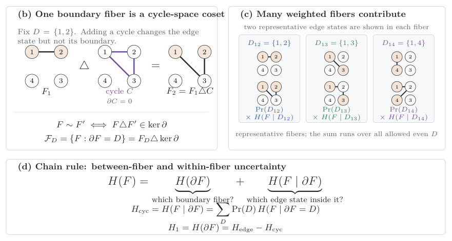
<figcaption class="paper-figure-caption"><b>Fig 1.</b> Figure 1: Cycle entropy as uncertainty inside weighted boundary fibers. (a) The critical TFI Born law is represented exactly as the odd-degree boundary D = ∂F of an independent Bernoulli edge configuration F. (b) For fixed boundary D, compatible edge configurations form an affine coset of the binary cycle space: adding a cycle C, which is an even-degree subgraph with ∂C = 0, changes F but leaves ∂F unchanged. (c) Different allowed boundaries label distinct weighted fibers; two representative edge states are shown in each displayed fiber, while the conditional entropy averages over all edge configurations and all allowed even D. (d) The Shannon chain rule separates uncertainty between...</figcaption>
</figure>
<figure class="paper-figure-card">
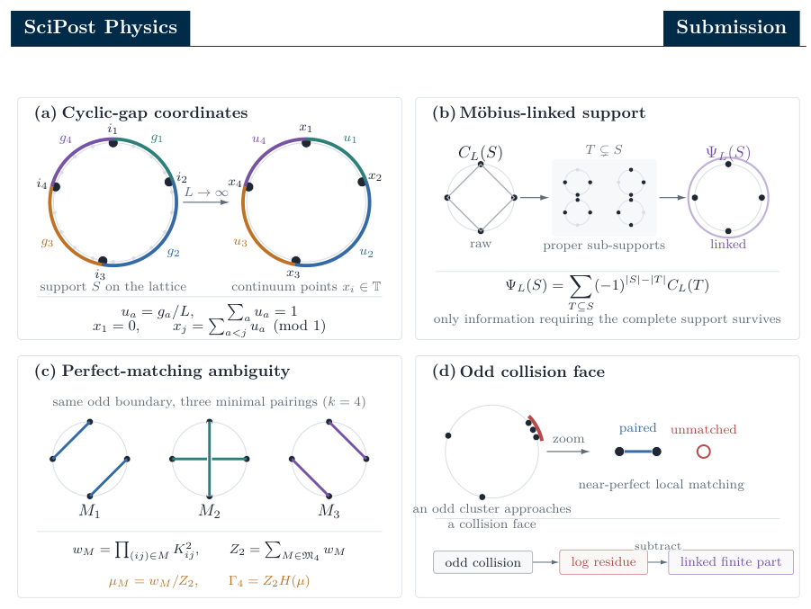
<figcaption class="paper-figure-caption"><b>Fig 2.</b> Figure 2: Geometry of the periodic vertex-linked expansion. (a) An ordered support S on the periodic lattice is parametrized by positive cyclic gaps ga, with P a ga = L. In the macroscopic limit ga = Lua, the cumulative gaps define continuum points xi ∈T. (b) The vertex Möbius cumulant ΨL(S) subtracts contributions carried by proper sub-supports T ⊊S, leaving the signed linked remainder assigned by inclusion–exclusion to the complete support; the support diagrams in panel (b) are schematic and do not represent particular edge configurations. (c) For an even support the leading all-odd boundary ambiguity is realized by perfect matchings. For k = 4 there are three minimal pairings M1, M2, M3,...</figcaption>
</figure>
<figure class="paper-figure-card">
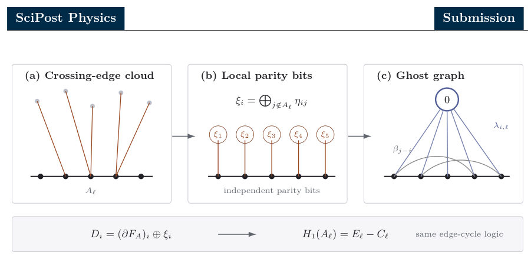
<figcaption class="paper-figure-caption"><b>Fig 3.</b> Figure 3: Exact interval reduction. (a) The exterior of Aℓcontributes through the cloud of crossing Bernoulli edges. (b) For each physical site i, those exterior edges enter the measured parity only through the single bit ξi = L j /∈Aℓηij, with Pr(ξi = 1) = λi,ℓ. (c) The independent parity bits ξi are represented exactly by edges from a single ghost vertex 0 to the physical sites, while the original internal edges of probabilities βj−i remain present. The physical components of ∂F + are the measured bits, and the ghost component is fixed by their total parity; the augmented graph therefore reproduces the complete interval measurement law.</figcaption>
</figure>
<figure class="paper-figure-card">
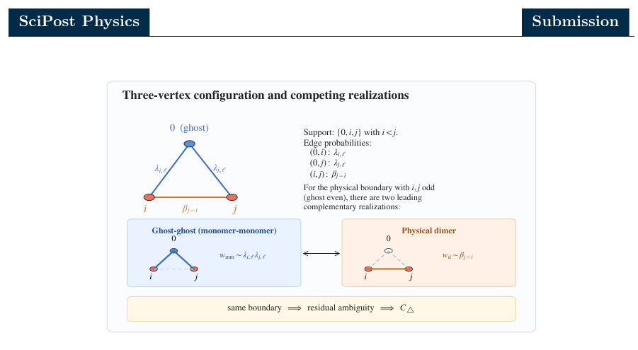
<figcaption class="paper-figure-caption"><b>Fig 4.</b> Figure 4: Three-vertex ambiguity underlying the first ghost-linked sector. On the support {0, i, j}, the unique triangle cycle allows two complementary realizations of the same physical boundary with i and j odd and the ghost even. The leading competing configurations are the two ghost edges, with weight proportional to λi,ℓλj,ℓ, and the single physical edge, with weight proportional to βj−i. The conditional triangle entropy C△measures the residual Shannon ambiguity between these realizations. The common-scale and fixed-separation regions that generate the logarithm in B2,ℓare analyzed in the text.</figcaption>
</figure>
<figure class="paper-figure-card">
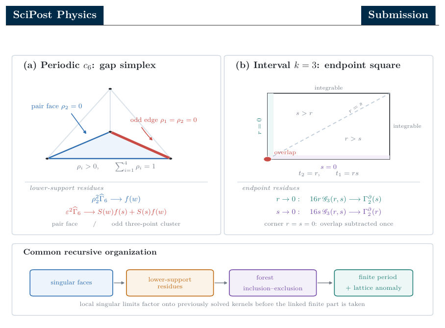
<figcaption class="paper-figure-caption"><b>Fig 5.</b> Figure 5: Singular geometry of the first higher linked periods. (a) For the periodic six-vertex problem, the positive gap variables ρi form a three-dimensional simplex. The pair-collision face ρ2 = 0 carries the already solved four-point residue f, while the codimension-two edge ρ1 = ρ2 = 0 gives the odd three-point-cluster factorization involving S and f. (b) For the interval k = 3 problem, t2 = r and t1 = rs map the ordered shape domain to the unit square. The faces r = 0 and s = 0 carry the lower-order kernel Γ∂ 2; the top and right faces are locally integrable, and the corner r = s = 0 is an overlap removed once by sector/forest inclusion–exclusion. The lower strip summarizes the common...</figcaption>
</figure>
</div>

<p><strong>Summary.</strong> This theoretical paper calculates the Shannon entropy for the critical transverse-field Ising chain by treating the problem directly at the singular point $n=1$. It employs advanced techniques involving graph theory and the Shannon chain rule to decompose the entropy into manageable, analytically solvable components. The work successfully derives universal constants characterizing the system's critical behavior, confirming previous results through a novel, rigorous mathematical framework.</p>
<p><strong>Why it may be interesting.</strong> The rigorous mathematical treatment of entanglement and information measures (Shannon entropy) at quantum critical points provides deep insights into the universal scaling laws governing quantum many-body systems, which is crucial for understanding quantum phase transitions.</p>
<details>
<summary>Detailed structure</summary>
<p><strong>Main problem.</strong> The paper determines the Shannon entropy of the critical transverse-field Ising (TFI) chain, specifically addressing the singularity encountered when using the conventional Rényi approach at the Shannon point ($n=1$).</p>
<p><strong>Main result.</strong> The entropy is decomposed into explicit independent-edge and conditional cycle-space terms, yielding an all-orders analytic hierarchy and recovering established universal coefficients like $\gamma_1$ and $\gamma_E$ through rigorous mathematical techniques.</p>
<p><strong>Method.</strong> The analysis uses the Shannon chain rule applied to the Born distribution, representing it via independent long-range Bernoulli edges and analyzing the resulting graph cycle space structure.</p>
<p><strong>Model / system.</strong> The system is the critical transverse-field Ising (TFI) chain, analyzed using its ground-state probability distribution derived from the Hamiltonian. The mathematical framework involves mapping the probability distribution to a boundary problem on a graph.</p>
<p><strong>Key observables.</strong> Shannon entropy ($H_1$), analytic edge anomaly ($\gamma_E$), and the universal logarithmic coefficient ($\gamma_1$).</p>
<p><strong>Important parameters / regimes.</strong> The critical point of the TFI chain, the finite size $L$, and the Shannon index $n=1$.</p>
<p><strong>Assumptions / limitations.</strong> The results are conditional on stated finite-part matching and forest assumptions, and the analysis relies on controlling residual information in the graph cycle space.</p>
<p><strong>Paper structure.</strong> The paper proceeds by establishing the entropy decomposition via the Shannon chain rule, evaluating specific terms (like the four-vertex term), and then deriving the final universal constants ($\gamma_E$ and $\gamma_1$) by analyzing the boundary and cycle-space contributions.</p>
</details>
<details>
<summary>Abstract</summary>
<p>Local-basis Shannon entropies of critical wave functions contain universal subleading information, but the Shannon point of the critical transverse-field Ising chain is singular in the conventional Rényi approach. We treat it directly at $n=1$ by representing the complete computational-basis Born distribution as the odd-degree boundary of independent long-range Bernoulli edges. The Shannon chain rule separates the entropy into explicit independent-edge and conditional cycle-space terms. For the periodic chain this isolates the analytic edge anomaly and organizes the remaining constant by linked vertex support. Conditional on the stated finite-part matching and forest assumptions, every nonvanishing linked coefficient is represented by an explicit finite-dimensional integral, giving an all-orders analytic hierarchy; the four-vertex term is evaluated in closed form, and the first few linked sectors already nearly saturate the established periodic constant, which is also reconstructed independently from the exact finite-size distribution. For an interval, the exterior reduces exactly to one ghost vertex and the explicit squared logarithms cancel, leaving the analytic edge contribution $γ_E=\log2/4-1/16$. The conditional cycle term has an exact all-support decomposition into physical-line and ghost-linked sectors; conditional on closure of the boundary forest subtraction, these sectors define an all-orders hierarchy of renormalized line and monomer--dimer boundary periods for the remaining logarithmic coefficient. The first complete augmented linked coefficient is evaluated in closed form, with an exact cancellation between its line and ghost boundary-layer anomalies; an independent reconstruction from exact finite-size probabilities recovers the established coefficient $γ_1=0.060020(3)$.</p>
</details>
<p><sub><a href="#top">↑ back to top</a></sub></p>

<p><a id="paper-2610.07157"></a></p>
<h3 id="interacting-multicomponent-math620math-magnets"><a href="http://arxiv.org/abs/2610.07157v1">Interacting multicomponent $SU(N)$ magnets</a></h3>
<p><strong>Authors:</strong> Alexios P. Polychronakos, Konstantinos Sfetsos<br>
<strong>Type:</strong> theory · <strong>Category:</strong> statistical mechanics · <strong>PDF:</strong> <a href="https://arxiv.org/pdf/2610.07157v1">https://arxiv.org/pdf/2610.07157v1</a><br>
<strong>Analysis basis:</strong> full PDF text, analyzed in chunks
<strong>Topic relevance:</strong> <code>Keldysh / 2PI / non-Gaussian methods</code> <strong>1/5</strong> · <code>analog quantum simulation</code> <strong>1/5</strong></p>
<div class="figure-strip-hint">↔ Scroll figures horizontally</div>
<div class="paper-figures-scroll">
<figure class="paper-figure-card">
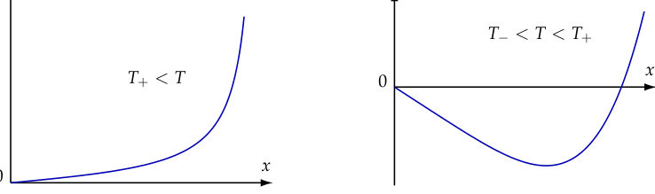
<figcaption class="paper-figure-caption"><b>Fig 1.</b> Figure 2: Plots of the left hand side of (3.28) for T+ &lt; T (left) and for T−&lt; T &lt; T+ (right). As T ≲T+ the nontrivial solution x ≳0.</figcaption>
</figure>
<figure class="paper-figure-card">
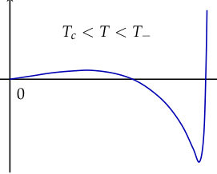
<figcaption class="paper-figure-caption"><b>Fig 2.</b> Figure 3: Plots of the left hand side of (3.28) for Tc &lt; T &lt; T−(left) and precisely at T = Tc (right), for ca &gt; 1 and cb &gt; 1. As T ≳T−the nontrivial solution x ≳0.</figcaption>
</figure>
<figure class="paper-figure-card">
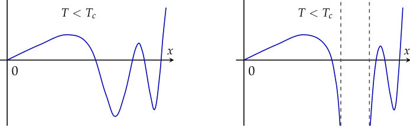
<figcaption class="paper-figure-caption"><b>Fig 3.</b> Figure 4: Characteristic plots of the left hand side of (3.28) for T &lt; Tc, for ca &gt; 1 and cb &gt; 1.</figcaption>
</figure>
<figure class="paper-figure-card">
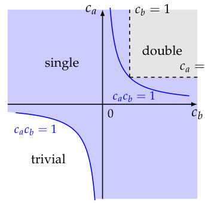
<figcaption class="paper-figure-caption"><b>Fig 4.</b> Figure 5: Regions in the (ca−cb)-plane demarcating the double (grey), single (blue), and trivial (white) magnet areas.</figcaption>
</figure>
<figure class="paper-figure-card">

<figcaption class="paper-figure-caption"><b>Fig 5.</b> Figure 6: Plot of the left hand side of (3.28) in the case ca = cb for T = Tc (left) and T ≲Tc (right). For T ≲Tc the slope at x = xc becomes positive, giving a stable solution flanked by two unstable ones, all stemming from the same unstable solution at T = Tc. This is unlike the case in fig. 4, where for T ≲Tc the emerging stable and unstable solutions stem from a point different from the existing unstable solution.</figcaption>
</figure>
</div>

<p><strong>Summary.</strong> This paper develops a theoretical framework to study the thermodynamics of complex magnets governed by SU(N) symmetry. Using the mean-field approximation, the authors derive the free energy and analyze the phase transitions, showing the potential for mixed magnetic ordering. The work is mathematically sophisticated, relying on representation theory and large-N limits to tackle the complex interactions.</p>
<p><strong>Why it may be interesting.</strong> The rigorous application of advanced group theory (SU(N) representations) to derive macroscopic thermodynamic properties (phase transitions) places it at the intersection of advanced statistical mechanics and quantum field theory, which is highly relevant for understanding complex many-body quantum systems.</p>
<details>
<summary>Detailed structure</summary>
<p><strong>Main problem.</strong> The study focuses on deriving the thermodynamics and phase structure of magnets whose interactions are invariant under a global SU(N) symmetry group.</p>
<p><strong>Main result.</strong> The system can exhibit mixed ferro-antiferromagnetic behavior, and the analysis provides explicit phase structures for simplified models, such as the two-atom case in SU(2).</p>
<p><strong>Method.</strong> The primary method involves using the mean-field approximation in the thermodynamic limit, combined with advanced techniques from representation theory of SU(N) to calculate partition functions.</p>
<p><strong>Model / system.</strong> The model consists of magnets made of molecules whose atoms interact via SU(N)-invariant two-body interactions. The Hamiltonian is generally expressed using SU(N) generators, and the analysis is performed in the large-N limit.</p>
<p><strong>Key observables.</strong> Equilibrium free energy (F), partition function (Z), and stability criteria derived from the Hessian matrix.</p>
<p><strong>Important parameters / regimes.</strong> The coupling matrix structure (C_st), temperature (T), and the large number of molecules (n).</p>
<p><strong>Assumptions / limitations.</strong> The analysis heavily relies on the mean-field approximation and a semiclassical treatment in the large-n limit, which is noted as being heuristic.</p>
<p><strong>Figures summary.</strong> Not specified by the notes, but the analysis involves deriving equations for equilibrium conditions and stability criteria.</p>
<p><strong>Paper structure.</strong> The paper progresses from defining the general Hamiltonian and applying the mean-field approach, through the calculation of the partition function using representation theory, and finally analyzing the stability conditions by comparing equilibrium and off-equilibrium free energies.</p>
</details>
<details>
<summary>Abstract</summary>
<p>We study magnets composed of molecules with atoms interacting via $SU(N)$-invariant two-body interactions. Atoms carry states transforming in generically different irreducible representations of $SU(N)$, and the interaction strength between atoms depends on the specific atoms involved. We derive the thermodynamics of these magnets in the mean-field approach, and find that they can exhibit mixed ferro-antiferromagnetic behavior. We present a full analysis of the simplest nontrivial case of molecules consisting of two atoms in the spin-$j$ representation of $SU(2)$, which generalizes conventional magnetic systems, and derive its phase structure and transitions.</p>
</details>
<p><sub><a href="#top">↑ back to top</a></sub></p>

<p><a id="paper-2610.07567"></a></p>
<h3 id="phase-diagram-and-transition-properties-of-the-blume-capel-model-a-monte-carlo-study"><a href="http://arxiv.org/abs/2610.07567v1">Phase diagram and transition properties of the Blume-Capel model: A Monte Carlo study</a></h3>
<p><strong>Authors:</strong> Tenglong Li, Zhigang Feng, Jie Zhang<br>
<strong>Type:</strong> theory · <strong>Category:</strong> statistical mechanics · <strong>PDF:</strong> <a href="https://arxiv.org/pdf/2610.07567v1">https://arxiv.org/pdf/2610.07567v1</a><br>
<strong>Analysis basis:</strong> full PDF text, analyzed in chunks
<strong>Topic relevance:</strong> <code>analog quantum simulation</code> <strong>1/5</strong> · <code>methods for driven-dissipative</code> <strong>1/5</strong></p>
<div class="figure-strip-hint">↔ Scroll figures horizontally</div>
<div class="paper-figures-scroll">
<figure class="paper-figure-card">

<figcaption class="paper-figure-caption"><b>Fig 1.</b> Fig. 1. Square-lattice Jx-Jy Blume-Capel model. Red, blue, and open circles denote S = +1, −1, and 0, respectively. The horizontal dashed bonds represent the Jx interaction, while the vertical solid bonds represent the Jy interaction.</figcaption>
</figure>
<figure class="paper-figure-card">

<figcaption class="paper-figure-caption"><b>Fig 2.</b> Fig. 2. Zero-field phase behavior of the Jx-Jy Blume-Capel model with Jy = 1. (a) Ground-state phases determined by Jx/Jy and D. (b) T-D phase diagram at Jx = −1 and h = 0. The gray solid and dashed segments are the second- and first- order CV boundaries from Ref. [24], while the blue solid and red dashed curves are the corresponding MC boundaries; the light shaded region denotes the MC SAF region, and P1 and P2 mark the CV and MC tricritical points, respectively. (c) and (d) m2 a as a function of D at T = 0.58 and 0.63 for L = 8, 16, 32, 64, and 96.</figcaption>
</figure>
<figure class="paper-figure-card">

<figcaption class="paper-figure-caption"><b>Fig 3.</b> Fig. 3. Finite-size behavior near the zero-field transition at T = 0.58. (a) Crystal-field dependence of the squared anti- ferromagnetic order parameter m2 a for L = 32, 64, and 96. (b) Maximum specific heat Cmax V as a function of L2. The gray dashed line, aL2 +b, is a guide to the Cmax V ∝L2 volume scaling expected for a first-order transition. (c) Energy-density distri- butions P(e), with e = E/N, evaluated at D = 1.9732 for L = 32 and 64 and at D = 1.9744 for L = 96.</figcaption>
</figure>
<figure class="paper-figure-card">

<figcaption class="paper-figure-caption"><b>Fig 4.</b> Fig. 4. Magnetic-field phase diagram at Jx = −1, Jy = 1, and D = 1.95. The blue solid curve denotes the MC phase bound- ary, while the blue and red dotted curves are the second- and first-order CV boundaries from Ref. [24]. Gray open circles trace the crossover points; the yellow and purple shaded bands indicate the temperature interval 0.201 ≤T ≤0.314 and field interval 1.075 ≤h ≤1.175 spanned by these points, respec- tively. The configurations +− +−, +0 +0 , and ++ ++ denote the SAF, mixed, and fully polarized states, respectively.</figcaption>
</figure>
<figure class="paper-figure-card">

<figcaption class="paper-figure-caption"><b>Fig 5.</b> Fig. 5. Finite-size thermal behavior at Jx = −1, Jy = 1, D = 1.95, and h = 0. (a) Specific heat CV as a function of temperature for L = 8, 16, 32, 64, and 96. (b) Squared antifer- romagnetic order parameter m2 a for the same system sizes.</figcaption>
</figure>
</div>

<p><strong>Summary.</strong> This paper uses Monte Carlo simulations to map the complex phase diagram of the Blume-Capel model under varying magnetic fields. It compares its findings against mean-field theories, confirming the existence of reentrant behavior but concluding that the primary phase transitions are second order. The work is valuable for understanding magnetic ordering and magnetocaloric responses in quantum spin systems.</p>
<p><strong>Why it may be interesting.</strong> The detailed study of phase transitions, critical points (like the TCP), and the magnetocaloric effect in a lattice model provides a rich playground for understanding how external fields and local energy terms modify magnetic ordering, which is relevant to quantum materials.</p>
<details>
<summary>Detailed structure</summary>
<p><strong>Main problem.</strong> The study investigates the phase diagram, transition properties, and magnetocaloric effects of the Blume-Capel model.</p>
<p><strong>Main result.</strong> The research confirms that while reentrant behavior can occur by varying the magnetic field at constant temperature, all relevant phase transitions examined were found to be second order, contradicting some mean-field predictions.</p>
<p><strong>Method.</strong> The study primarily employs the Monte Carlo (MC) simulation method, supplemented by comparisons with the Cluster Variation (CV) method and Mean Field Theory.</p>
<p><strong>Model / system.</strong> The system is the Jx-Jy Blume-Capel model on a square lattice, described by a Hamiltonian involving exchange interactions (Jx, Jy), a crystal field term (D), and an external magnetic field (h).</p>
<p><strong>Key observables.</strong> Staggered magnetization, specific heat ($C_V$), magnetic entropy change ($\Delta S_m$), and the Binder ratio are key diagnostics used to locate phase transitions.</p>
<p><strong>Important parameters / regimes.</strong> Key parameters include the coupling constants ($J_x, J_y$), the crystal field parameter ($D$), and the external magnetic field ($h$). The analysis focuses on various regimes, including the zero-field case and mixed-state regimes.</p>
<p><strong>Assumptions / limitations.</strong> The analysis relies on comparing MC results against CV approximations, noting that differences in phase boundaries and transition order are attributed to the finite-cluster approximation of CV.</p>
<p><strong>Figures summary.</strong> Figures illustrate the lattice structure, compare MC vs. CV phase boundaries, show finite-size scaling behavior near transitions, and map the magnetic-field dependence of order parameters and magnetocaloric effects.</p>
<p><strong>Paper structure.</strong> The paper systematically investigates the phase diagram by analyzing the zero-field case, then examining the effect of an external magnetic field, confirming reentrant behavior under specific conditions, and finally quantifying the magnetocaloric response.</p>
</details>
<details>
<summary>Abstract</summary>
<p>The Jx-Jy Blume-Capel model, with and without an external magnetic field, is investigated using the Monte Carlo method. Our aim is to verify the location of the tricritical point, examine the existence of reentrant behavior, and study the magnetocaloric properties of this specifically designed system. In the non-field case, the critical temperature given by the Monte Carlo simulations is lower compared to the conventional antiferromagnetic square lattice. When an external magnetic field is applied, we observed signs of a one-dimensional spontaneous symmetry-breaking phase in the mixed-states regime, which is counterintuitive with secondary specific-heat peak. We take the snapshot of this state and elucidated the underlying mechanisms using mean field theory in the field of spin-1 spinor Bose-Einstein condensate . Regarding reentrant behavior, we confirmed its occurrence as the magnetic field varies, but only when the temperature is kept constant. Temperature-dependent reentrant behavior could not be identified within this system. Finally, we examined the magnetocaloric properties and found no evidence of first-order phase transitions within the region of the considered phase-transition point. Although both inverse and direct magnetocaloric effects are present and related to the mixed state, we identified that the relevant phase transitions are all of the second order.</p>
</details>
<p><sub><a href="#top">↑ back to top</a></sub></p>

<p><a id="paper-2610.08185"></a></p>
<h3 id="classical-verification-of-a-remote-quantum-processor-via-degenerate-concordant-computations-an-application-to-randomness-generation"><a href="http://arxiv.org/abs/2610.08185v1">Classical Verification of a Remote Quantum Processor via Degenerate Concordant Computations: An Application to Randomness Generation</a></h3>
<p><strong>Authors:</strong> Bishal Kumar Das, Lakshya Priyadarshi<br>
<strong>Type:</strong> theory · <strong>Category:</strong> quantum information and computing · <strong>PDF:</strong> <a href="https://arxiv.org/pdf/2610.08185v1">https://arxiv.org/pdf/2610.08185v1</a><br>
<strong>Analysis basis:</strong> full PDF text, analyzed in chunks
<strong>Topic relevance:</strong> <code>quantum measurements</code> <strong>1/5</strong></p>
<div class="figure-strip-hint">↔ Scroll figures horizontally</div>
<div class="paper-figures-scroll">
<figure class="paper-figure-card">

<figcaption class="paper-figure-caption"><b>Fig 1.</b> FIG. 1. One five-qubit instance of the construction, end to end (ℓ= 3, a secret parity over all five qubits, L = 20, λ = 1, θ = 0.15). Every support, sector, permutation and number shown is taken from that instance. (a) What the quantum processor receives and runs. The client sends a uniformly random label, here |10100⟩; the processor prepares it in the computational basis, applies the compiled gates Gt, each on three qubits straddling the central cut, measures in the public basis M ̸= UL, and returns one bitstring. It is given the compiled 8 × 8 matrices, their supports and M, and nothing else. (b) How the client forms G1 = U1P1B1U † 0 on the support {q0, q1, q3}: a product of four 8 × 8...</figcaption>
</figure>
<figure class="paper-figure-card">

<figcaption class="paper-figure-caption"><b>Fig 2.</b> FIG. 2. The protocol. The client builds the circuit from a secret parity s and sends the compiled gates once. Each round it sends a uniformly random label xr; the server pre- pares |xr⟩, applies the gates and returns the outcome yr of a measurement in M ̸= UL. The client keeps, for each round, the weight wr = 1 + λ(−1)⟨s,xr⟩, the eigenvalue of xr in the hidden state, and never sends it. Bottom: the weighted en- semble is Cρ0C†, in which the block factors cancel, so the target distribution costs O(n) per outcome; each run is a sin- gle component, which the blocks entangle.</figcaption>
</figure>
</div>

<p><strong>Summary.</strong> This paper presents a novel, efficient classical verification protocol for remote quantum processors using degenerate concordant computations. By exploiting the mathematical structure of these states, the client can verify computation integrity in polynomial time, circumventing exponential sampling costs. This work is significant for building trust in outsourced quantum computing services.</p>
<p><strong>Why it may be interesting.</strong> The protocol provides a concrete, efficient cryptographic primitive for verifying quantum computation integrity, which is crucial for realizing trustworthy cloud quantum services.</p>
<details>
<summary>Detailed structure</summary>
<p><strong>Main problem.</strong> To develop a computationally efficient classical protocol for a client to verify that a remote quantum processor has executed a computation, especially for applications like randomness generation.</p>
<p><strong>Main result.</strong> The authors propose a protocol based on degenerate concordant computations that allows the client to score each verification round in time $O(n)$, significantly beating the exponential cost of naive sampling.</p>
<p><strong>Method.</strong> The protocol leverages the structure of degenerate concordant states, where the client uses a secret parity to predict the ensemble evolution via inner products, while performing two specific tests: an input–output agreement test and a weighted collision test.</p>
<p><strong>Model / system.</strong> The model involves quantum computation layers $G_t = U_t P_t B_t U_{t-1}^\dagger$ acting on a state assumed to be concordant (diagonal in a product basis). The security relies on the client's secret knowledge of the degenerate sectors.</p>
<p><strong>Key observables.</strong> Input–output agreement test statistics ($\hat{S}$) and weighted collision statistics ($Z_w$).</p>
<p><strong>Important parameters / regimes.</strong> The client's computational cost is $O(n)$ per round; the security relies on the secret parity $s$ remaining hidden.</p>
<p><strong>Assumptions / limitations.</strong> The soundness of the explicit construction is stated as a conjecture; the client must ensure inputs are uniformly random.</p>
<p><strong>Paper structure.</strong> The paper first establishes the computational difficulty of verification, then introduces the degenerate concordant framework, details the client's $O(n)$ prediction mechanism using secret parity, and finally proves completeness, efficiency, and soundness (with the caveat of the conjecture).</p>
</details>
<details>
<summary>Abstract</summary>
<p>A client who rents a cloud quantum processor cannot easily tell whether the bitstrings it receives came from a quantum device. Certification by random circuit sampling runs on present hardware, but scoring each returned sample costs the client time $O(2^n)$. We give a protocol in which the client scores each round in time $O(n)$, built on degenerate concordant ensembles. When a concordant state has a degenerate spectrum, every concordance-preserving gate factorizes as $G_t=U_tP_tB_tU_{t-1}^\dagger$, and the block factor $B_t$, which commutes with the state, cancels from the ensemble while entangling each pure component. The client holds a secret parity whose cosets are the degenerate sectors of every layer, so that it builds the circuit and predicts the ensemble with one inner product per layer. The secret never leaves the client. Inputs are sent uniformly at random, and the client attaches to each round, in its own bookkeeping, the eigenvalue of that input in the hidden state; both verification statistics, an input--output agreement test and a weighted collision test, then compare the server's samples with the non-flat output distribution of the concordant computation. We prove completeness, client efficiency, and soundness in an ideal model in which the compiled circuit reveals nothing about the secret, and we show that the secret must stay hidden: a classical server that holds it passes. For the explicit construction we prove that the single-qubit symmetry test used in efficient simulations of concordant computation fails on non-product inputs with unbiased marginals, and we measure that the local-basis finder of Cable and Browne halts on every layer we tested, that the transmitted component saturates the maximal Schmidt rank, that the circuit is not Clifford, and that matrix-product spoofers are rejected. Soundness of the explicit construction is stated as a conjecture.</p>
</details>
<p><sub><a href="#top">↑ back to top</a></sub></p>

<p><a id="paper-2610.08265"></a></p>
<h3 id="closed-analytical-form-of-many-body-free-volume-and-thermodynamics-of-monodisperse-hard-disks"><a href="http://arxiv.org/abs/2610.08265v1">Closed analytical form of many-body free volume and thermodynamics of monodisperse hard disks</a></h3>
<p><strong>Authors:</strong> Victor M. Pergamenshchik, Taras Bryk, Andrij Trokhymchuk<br>
<strong>Type:</strong> theory · <strong>Category:</strong> statistical mechanics · <strong>PDF:</strong> <a href="https://arxiv.org/pdf/2610.08265v1">https://arxiv.org/pdf/2610.08265v1</a><br>
<strong>Analysis basis:</strong> full PDF text, analyzed in chunks
<strong>Topic relevance:</strong> <code>analog quantum simulation</code> <strong>1/5</strong></p>
<div class="figure-strip-hint">↔ Scroll figures horizontally</div>
<div class="paper-figures-scroll">
<figure class="paper-figure-card">

<figcaption class="paper-figure-caption"><b>Fig 1.</b> FIG. 1. Fragment of an equilibrium system of N hard disks. The (N −1) hard disks are dark circles, and the connected σ-circles are light circles. The n-th disk and circle are shown by dashes. The inner white area is the global free volume of the n-th disk, the hatched fraction is its cavity, and the clear fraction is its private cell.</figcaption>
</figure>
<figure class="paper-figure-card">

<figcaption class="paper-figure-caption"><b>Fig 2.</b> FIG. 2. A configuration of (N −1) hard disks in an equilib- rium N-disk system; the N-th disk is transparent, not seen, and its center is in the white area. The shown (N −1) disk configuration is allowed as its σ-circles leave a cell (white area) for the N-th disk. However, it is different from the equilib- rium configuration of (N −1) disks which is homogeneous. In the equilibrium (N −1) system one of the N −1 disks, whose σ-circle is indicated by solid line, would be at the position shown by dashes. This dashed σ-circle fully covers the white area so that another, N-th disk, cannot be inserted. This is a disallowed configuration as the N-th disk has no place in it. Thus, insertion of N-th disk...</figcaption>
</figure>
<figure class="paper-figure-card">

<figcaption class="paper-figure-caption"><b>Fig 3.</b> FIG. 3. Left panel: A system of N = 23 hard disks with dark cores. The chosen k −1 = 9 hard disks have light concentric σ-circles. Right panel: The light σ−circles are those in the left panel and the empty area is the free volume V10{x9}23 for any dark disk chosen as the 10-th disk. As here η is below 0.5, the rest N −k + 1 = 14 hard disks are accommodated for any positions of the chosen 9 disks, the cavity dominates the global free volume, and the gas-like approximation (G) is justified.</figcaption>
</figure>
<figure class="paper-figure-card">

<figcaption class="paper-figure-caption"><b>Fig 4.</b> FIG. 4. The mean intersection areas µ2, µ3, and µ4 of two, three, and four σ-circles as functions of the packing fraction η. Inset: the mean intersection area µ5 of five σ-circles. The diameter is set to σ = 1 .</figcaption>
</figure>
<figure class="paper-figure-card">

<figcaption class="paper-figure-caption"><b>Fig 5.</b> FIG. 5. The pressure P predicted by theory (solid line) and superimposed on the simulation data Pexp (crosses10, empty squares9 and filled circles3,6,7). The vertical dash lines de- limit, from left to right, the G region, the crossover (with a small mismatch slightly rightward of η = 0.55) and the mixed-fluid regions, the fluid-solid phase coexistence region 0.696 &lt; η &lt; 0.720 (empty), and the L region.</figcaption>
</figure>
</div>

<p><strong>Summary.</strong> This paper provides a breakthrough analytical theory for the thermodynamics of hard disks by deriving a closed-form expression for the many-body free volume based on geometric intersection areas. It successfully reproduces the known equation of state and reveals complex intermediate fluid regimes. The work establishes a powerful geometric framework for calculating configurational entropy in excluded volume systems.</p>
<p><strong>Why it may be interesting.</strong> While focused on classical statistical mechanics, the rigorous derivation of exact geometric measures for configurational entropy and the identification of local order parameters (five-disk intersection area) provide powerful mathematical tools applicable to analyzing complex many-body correlations in quantum systems.</p>
<details>
<summary>Detailed structure</summary>
<p><strong>Main problem.</strong> The paper addresses the difficulty of analytically formulating the many-body free volume and thermodynamics for the hard disk model due to its complex geometry.</p>
<p><strong>Main result.</strong> The authors derive a closed, exact analytical representation for the free volume using intersection areas of up to five exclusion disks, successfully reproducing the equation of state across most density regimes.</p>
<p><strong>Method.</strong> The methodology involves a rigorous geometric approach to calculate the free volume, leading to factorizations of the partition function based on conditional free volumes.</p>
<p><strong>Model / system.</strong> The system is the monodisperse hard disk model in two dimensions, a fundamental reference system for excluded volume physics and liquid structure.</p>
<p><strong>Key observables.</strong> Free volume ($V_{N,n}$), cavity ($\langle C_{N+1} 
angle_N$), private cell ($c_{N,n}$), and the five-disk intersection area (as an ordering measure).</p>
<p><strong>Important parameters / regimes.</strong> Density ($\eta$), temperature (implied by equilibrium), and the number of disks ($N$).</p>
<p><strong>Assumptions / limitations.</strong> The theory relies on the geometric identity that the free volume can be expressed exactly via intersection areas, and it analyzes limiting regimes (low/high density).</p>
<p><strong>Figures summary.</strong> Figure 1 illustrates the decomposition of the free volume into the cavity and the private cell within an equilibrium hard disk configuration.</p>
<p><strong>Paper structure.</strong> The paper progresses by establishing the geometric basis for free volume, deriving exact relationships between free volume, cavity, and private cell, calculating the partition function factorizations, and finally analyzing the equation of state across different fluid regimes.</p>
</details>
<details>
<summary>Abstract</summary>
<p>The hard disk model is a fundamental reference system for excluded volume physics, liquid structure, and 2D ordering. Yet, despite its apparent simplicity, an analytical formulation of its thermodynamics has remained difficult because the free volume available to disks centers has a highly nontrivial many-body geometry. Here we show that this geometry admits a closed and exact representation: for any given hard disk configuration, the free volume can be analytically expressed through intersection areas of up to five exclusion disks. This provides a direct geometrical route from particle coordinates to the configurational partition function and entropy. We prove that the N disk partition function factorizes into a product of conditional free volumes and identify its two limiting asymptotic forms: the low density fluid regime controlled by extensive cavities and the high density fluid regime controlled by intensive private cells. Using the geometric measures computed from representative equilibrium particle configurations, the resulting theory reproduces the established hard disk equation of state over almost the entire density range up to close packing. At intermediate densities, the analysis reveals a mixed fluid regime in which localized caged defects provide an additional configurational entropy within the density interval preceding liquid hexatic coexistence. Finally, the five disk intersection area is shown to be a sensitive local scalar measure of hexagonal ordering, complementing the orientational order parameter and emphasizing the central role of many-body correlations.</p>
</details>
<p><sub><a href="#top">↑ back to top</a></sub></p>

<p><a id="paper-2610.07775"></a></p>
<h3 id="convergence-without-finite-exactness-in-the-eigenstate-quantum-bootstrap"><a href="http://arxiv.org/abs/2610.07775v1">Convergence Without Finite Exactness in the Eigenstate Quantum Bootstrap</a></h3>
<p><strong>Authors:</strong> Ye Zhou, Daniel Keren<br>
<strong>Type:</strong> theory · <strong>Category:</strong> other · <strong>PDF:</strong> <a href="https://arxiv.org/pdf/2610.07775v1">https://arxiv.org/pdf/2610.07775v1</a><br>
<strong>Analysis basis:</strong> full PDF text, analyzed in chunks
<strong>Topic relevance:</strong> <code>quantum measurements</code> <strong>1/5</strong></p>
<div class="figure-strip-hint">↔ Scroll figures horizontally</div>
<div class="paper-figures-scroll">
<figure class="paper-figure-card">

<figcaption class="paper-figure-caption"><b>Fig 1.</b> Low-resolution page preview, page 2</figcaption>
</figure>
<figure class="paper-figure-card">

<figcaption class="paper-figure-caption"><b>Fig 2.</b> Low-resolution page preview, page 3</figcaption>
</figure>
<figure class="paper-figure-card">

<figcaption class="paper-figure-caption"><b>Fig 3.</b> Low-resolution page preview, page 4</figcaption>
</figure>
<figure class="paper-figure-card">

<figcaption class="paper-figure-caption"><b>Fig 4.</b> Low-resolution page preview, page 5</figcaption>
</figure>
<figure class="paper-figure-card">

<figcaption class="paper-figure-caption"><b>Fig 5.</b> Low-resolution page preview, page 6</figcaption>
</figure>
</div>

<p><strong>Summary.</strong> This paper rigorously examines the eigenstate quantum-mechanical bootstrap, demonstrating that even when moment constraints converge to the physical spectrum, they do so without ever achieving exactness at any finite computational step. Using a sextic oscillator as a key example, the authors show that persistent gaps exist between the calculated bounds and the true physical value. This highlights fundamental limitations in using finite moment data to fully characterize quantum systems.</p>
<p><strong>Why it may be interesting.</strong> This work provides deep theoretical insights into the limitations of moment-based reconstruction techniques in quantum mechanics, which is crucial for understanding the robustness of spectral determination methods in quantum field theory and many-body physics.</p>
<details>
<summary>Detailed structure</summary>
<p><strong>Main problem.</strong> The paper investigates the convergence properties of the eigenstate quantum-mechanical bootstrap method when applied to determining physical quantum spectra.</p>
<p><strong>Main result.</strong> It proves that the bootstrap can converge to the physical moment set without achieving exactness at any finite computational order, demonstrating persistent gaps between finite bounds and the true physical value.</p>
<p><strong>Method.</strong> The analysis employs moment methods, semidefinite programming (SDP) constraints derived from operator identities, and functional analysis on the Weyl algebra to constrain quantum expectation values.</p>
<p><strong>Model / system.</strong> The primary model analyzed is a one-dimensional quasi-exactly solvable sextic oscillator, though the methods are generalized to confining polynomial Schrödinger operators.</p>
<p><strong>Key observables.</strong> The centered observable $u^2$, and the moment bounds $\langle q^{2n}_j 
angle$ and $\langle p^{2n}_j 
angle$ for position and momentum.</p>
<p><strong>Important parameters / regimes.</strong> The truncation order ($K$) of the moment space, and the physical energy eigenvalue ($e$).</p>
<p><strong>Assumptions / limitations.</strong> The convergence theorems rely on specific polynomial hypotheses (sum-of-squares conditions) being satisfied by the potential, and the analysis often involves assuming the existence of a compact resolvent.</p>
<p><strong>Figures summary.</strong> The notes do not describe specific figures, but mention numerical tables showing the convergence of objective functions for different truncation orders ($K=3, 4, 5$).</p>
<p><strong>Paper structure.</strong> The paper progresses by first establishing the non-exactness of finite bounds for the sextic oscillator, then proving uniform moment bounds for general confining potentials, and finally extending the analysis to show that the failure of finite exactness persists even with additional localizing constraints.</p>
</details>
<details>
<summary>Abstract</summary>
<p>The eigenstate quantum-mechanical bootstrap can converge to the physical moment set while remaining nonexact at every finite order. We prove this for a one-dimensional quasi-exactly solvable sextic oscillator at explicitly known eigenvalues, including excited levels. At every finite order, the lower and upper bounds on $u^2$ remain strictly below and above its physical value, even after adjoining arbitrary finite polynomial Gram tests and all eigenstate-annihilator relations visible in the retained moment space. Hence neither side of the centered observable admits a finite sum-of-squares certificate modulo the eigenstate annihilator. The gap persists under any finite set of additional localizing constraints whose weights are strictly positive on polynomial vectors. We then prove convergence for polynomial Schrödinger operators satisfying explicit sum-of-squares confinement and derivative bounds. The eigenstate relations give moment estimates uniform in the truncation order; these yield a regular Schrödinger representation supported on the prescribed eigenspace. Finally, a four-mode extension combines this fixed-observable obstruction with feasible position moments having no positive representing measure at every finite order. At level three, this construction yields nonphysical feasible points with strictly positive definite moment matrices.</p>
</details>
<p><sub><a href="#top">↑ back to top</a></sub></p>

<p><a id="paper-2610.07144"></a></p>
<h3 id="decoupling-spectral-gaps-from-entanglement-complexity-in-quantum-annealing"><a href="http://arxiv.org/abs/2610.07144v1">Decoupling Spectral Gaps from Entanglement Complexity in Quantum Annealing</a></h3>
<p><strong>Authors:</strong> Roopayan Ghosh, Sougato Bose<br>
<strong>Type:</strong> theory · <strong>Category:</strong> statistical mechanics · <strong>PDF:</strong> <a href="https://arxiv.org/pdf/2610.07144v1">https://arxiv.org/pdf/2610.07144v1</a><br>
<strong>Analysis basis:</strong> full PDF text, analyzed in chunks
<strong>Topic relevance:</strong> <code>analog quantum simulation</code> <strong>1/5</strong></p>
<div class="figure-strip-hint">↔ Scroll figures horizontally</div>
<div class="paper-figures-scroll">
<figure class="paper-figure-card">

<figcaption class="paper-figure-caption"><b>Fig 1.</b> FIG. 1: Energy gap and bipartite entanglement entropy in the fully connected p-spin model. (a) and (e) show the energy gap ∆(s) and half-system entanglement entropy S(s), respectively, as functions of the annealing parameter s for p = 3. (b) and (f) display the corresponding finite-size scaling of the minimum gap ∆min and maximum entropy Smax. (c) and (g) show the same quantities for p = 4. (d) plotted in log-log scale and (h) plotted in log-linear scale correspond to the second-order case p = 2. For the first-order transitions (p = 3 and p = 4), the minimum gap decreases exponentially with system size, whereas the maximum entropy approaches finite constants, Smax →ln 2 for p = 3 and Smax...</figcaption>
</figure>
<figure class="paper-figure-card">

<figcaption class="paper-figure-caption"><b>Fig 2.</b> FIG. 2: Finite-size scaling of the minimum energy gap ∆min and maximum bipartite entanglement entropy Smax for non-stoquastically catalyzed fully connected p-spin models. The top row shows the minimum gap for (a) p = 3, k = 3 and (b) p = 5, k = 5, while the bottom row shows the corresponding maximum bipartite entanglement entropy for (c) p = 3, k = 3 and (d) p = 5, k = 5. The gaps are shown on a log-log scale and (d) is plotted in log-linear scale. The dashed line in (c) indicate the first-order value Smax = ln 2.</figcaption>
</figure>
<figure class="paper-figure-card">

<figcaption class="paper-figure-caption"><b>Fig 3.</b> FIG. 3: Entanglement structure of a representative bipartite graph instance exhibiting a first-order quantum phase transition. (a) Schematic of the bipartite graph, showing the natural partition into subsystems A and B, with intra-partition weights W1 = 0.04 and W2 = 0.0396, and inter-partition coupling J = 0.2132. (b) Bipartite entanglement entropy across the natural 5|6 graph partition for L = 11 spins as a function of the annealing parameter s. The entropy develops a broad enhancement at intermediate s, associated with the delocalization of the annealing state, before decreasing as the system approaches the first-order transition. (c) Instantaneous energy gap ∆between the ground and...</figcaption>
</figure>
<figure class="paper-figure-card">

<figcaption class="paper-figure-caption"><b>Fig 4.</b> FIG. 4: Entanglement across bipartitions for a representative random graph instance at a first-order quantum phase transition. Left: Graph corresponding to the avoided crossing, with vertices colored according to the two dominant computational basis configurations participating in the transition. Gray vertices remain unchanged, while red and blue denote spins that change their orientation between the two configurations. Center: Histogram of the bipartite entanglement entropy over all 511 inequivalent bipartitions at different points along the annealing path, namely s = sc, sc −0.1, sc −0.2, sc −0.5, and sc −0.9. Right: Bipartite entanglement entropy at the critical point s = sc for every...</figcaption>
</figure>
<figure class="paper-figure-card">

<figcaption class="paper-figure-caption"><b>Fig 5.</b> FIG. 5: Scaling of the gap at avoided level crossing and bipartite entanglement for the constructed resonant-manifold annealing Hamiltonian. The numerical results are obtained for Γ = 1, K = 10, UG = 30, UE = 0.5, and δ = 0.03n, with n = 3, . . . , 6 and L = 2n, alongside the one selector spin making system sizes 2n + 1 being simulated. the crossing occurs at sc ∼0.57 −0.61, drifting towards the larger value with increasing system sizes. (a) The minimum gap decreases exponentially with system size, with the dashed line showing a fit to ln ∆min = 1.316 −1.017L, corresponding to ∆min ∼e−1.017L. (b) The entanglement entropy across the (A, C)|B bipartition grows logarithmically with system...</figcaption>
</figure>
</div>

<p><strong>Summary.</strong> This work challenges the assumption that the difficulty of quantum annealing (spectral gap) must correlate with the entanglement complexity of the system. By analyzing various spin models and graph structures, the authors provide explicit counterexamples showing that these two quantities can scale independently. This suggests that a more sophisticated geometric characterization of the state evolution is needed to understand quantum resource requirements.</p>
<p><strong>Why it may be interesting.</strong> It provides a deep theoretical understanding of the resources required for quantum computation, suggesting that geometric properties of the state evolution manifold, rather than just gap size, are the critical bottleneck.</p>
<details>
<summary>Detailed structure</summary>
<p><strong>Main problem.</strong> The paper investigates whether the difficulty of adiabatic quantum annealing, quantified by the minimum spectral gap, must correlate with the complexity of the quantum state traversed, measured by entanglement complexity.</p>
<p><strong>Main result.</strong> The authors demonstrate that gap scaling and entanglement complexity are not uniquely linked, showing examples where one scales differently from the other.</p>
<p><strong>Method.</strong> The analysis uses theoretical constructions, including $p$-spin models, bipartite graph models, and random graph instances, to calculate spectral gaps and entanglement entropy.</p>
<p><strong>Model / system.</strong> The study focuses on quantum annealing processes applied to various spin models, including the fully connected $p$-spin model and structured optimization problems on bipartite and random graphs.</p>
<p><strong>Key observables.</strong> Minimum spectral gap ($\Delta_{\min}$), Bipartite entanglement entropy ($S$), and Schmidt rank.</p>
<p><strong>Important parameters / regimes.</strong> System size ($L$), interaction order ($p$), and the annealing parameter ($s$).</p>
<p><strong>Assumptions / limitations.</strong> The analysis relies on comparing different theoretical regimes (first-order vs. continuous transitions) and analyzing specific Hamiltonian structures.</p>
<p><strong>Figures summary.</strong> Figures illustrate finite-size scaling of $\Delta_{\min}$ and $S_{\max}$ for $p$-spin models, and show entanglement evolution across bipartitions for graph models.</p>
<p><strong>Paper structure.</strong> The paper establishes the problem using $p$-spin models, analyzes two conventional regimes (exponential gap/bounded entanglement vs. polynomial gap/logarithmic entanglement), and then provides counterexamples using structured and random graph models to decouple the two quantities.</p>
</details>
<details>
<summary>Abstract</summary>
<p>Exponentially small spectral gaps are the central obstacle to adiabatic quantum annealing, yet whether such bottlenecks demand correspondingly complex entanglement remains unclear. We show that gap scaling and entanglement complexity need not be linked. Conventional first-order transitions combine exponentially small gaps with bounded $O(1)$ bipartite Schmidt rank, even though the critical states retain global multipartite correlations, while continuous transitions combine polynomially closing gaps with logarithmically growing entanglement. We show that each pairing can also be inverted: in a known first-order transition in a staggered-field antiferromagnetic Ising chain the gap closes polynomially despite bounded Schmidt rank, while we construct a mirror-twin manifold model whose gap closes exponentially even as its entanglement entropy grows logarithmically with system size. We derive bounds connecting Schmidt rank to Hamming-space geometry, and identify manifold density and connectivity as the ingredients that determine which combination occurs. These results show that entanglement complexity alone cannot characterize annealing difficulty, and point toward a broader search for quantum resources that capture the geometry of state evolution in Hilbert space.</p>
</details>
<p><sub><a href="#top">↑ back to top</a></sub></p>

<p><a id="paper-2610.07991"></a></p>
<h3 id="entanglement-swapping-scheduling-for-quantum-repeater-chains-under-decoherence-during-classical-communications"><a href="http://arxiv.org/abs/2610.07991v1">Entanglement Swapping Scheduling for Quantum Repeater Chains under Decoherence during Classical Communications</a></h3>
<p><strong>Authors:</strong> Jorge Benito Díaz, Andrés Agustí, Jabier Faba, Laura Ortiz, Luis Robledo, Vicente Martín<br>
<strong>Type:</strong> theory · <strong>Category:</strong> quantum information and computing · <strong>PDF:</strong> <a href="https://arxiv.org/pdf/2610.07991v1">https://arxiv.org/pdf/2610.07991v1</a><br>
<strong>Analysis basis:</strong> full PDF text, analyzed in chunks
<strong>Topic relevance:</strong> <code>correlated / nonlocal dissipation</code> <strong>1/5</strong></p>
<div class="figure-strip-hint">↔ Scroll figures horizontally</div>
<div class="paper-figures-scroll">
<figure class="paper-figure-card">

<figcaption class="paper-figure-caption"><b>Fig 1.</b> Fig. 1. Entanglement rate as a function of the number of intermediate repeaters for the metropolitan scenario, with Ltot = 60 km, p0 = 0.5, q = 0.8, and w0 = 1. Results are shown for three representative memory decoherence times τ ∈{3, 6, 12} ms, using the early-abort policy. The direct- link configuration N = 0 is included as a baseline only for τ = 6 ms.</figcaption>
</figure>
<figure class="paper-figure-card">

<figcaption class="paper-figure-caption"><b>Fig 2.</b> Fig. 2. Entanglement rate as a function of the number of intermediate repeaters for the intermetropolitan scenario, with Ltot = 500 km, p0 = 0.5, q = 0.8, and w0 = 1. Results are shown for three representative memory decoherence times τ ∈{100, 150, 500} ms, using the early-abort policy.</figcaption>
</figure>
<figure class="paper-figure-card">

<figcaption class="paper-figure-caption"><b>Fig 3.</b> Figure 2 shows a qualitatively different behavior from the metropolitan scenario. For all memory regimes considered,</figcaption>
</figure>
</div>

<p><strong>Summary.</strong> This paper provides an analytical model to optimize quantum repeater chains for long-distance entanglement distribution by accounting for memory decoherence. It compares three scheduling strategies—Parallel, Tree, and Hybrid—to determine the entanglement rate as a function of repeater count. The key finding is that an optimal number of repeaters exists, balancing the benefits of shorter links against the cumulative decoherence penalty.</p>
<p><strong>Why it may be interesting.</strong> This work directly addresses the practical limitations of scaling quantum networks by quantifying the detrimental effects of decoherence and classical communication delays on entanglement distribution protocols.</p>
<details>
<summary>Detailed structure</summary>
<p><strong>Main problem.</strong> The paper develops an analytical model to estimate the impact of decoherence during the heralding process in quantum repeaters used for long-distance entanglement distribution.</p>
<p><strong>Main result.</strong> The analysis reveals a fundamental trade-off: while increasing the number of repeaters boosts entanglement generation, the additive penalty from memory decoherence eventually dominates, proving the existence of an optimal repeater count.</p>
<p><strong>Method.</strong> The authors developed an analytical framework comparing three scheduling strategies (Binary-Tree, Parallel, Hybrid) to calculate the entanglement rate by accounting for memory exposure during entanglement generation and swapping.</p>
<p><strong>Model / system.</strong> The system modeled is a homogeneous linear chain of N quantum repeaters connecting two end nodes over a total distance L_tot. The process involves sequential entanglement generation (EG) followed by entanglement swapping (ES) operations.</p>
<p><strong>Key observables.</strong> Entanglement rate (measured using logarithmic negativity) and the optimal number of repeaters (N).</p>
<p><strong>Important parameters / regimes.</strong> Memory decoherence time ($\tau$), total distance ($L_{tot}$), and the number of repeaters ($N$).</p>
<p><strong>Assumptions / limitations.</strong> The analysis is restricted to prepare-and-swap strategies, and it models memory decoherence as an exponential time-decay of the Werner parameter.</p>
<p><strong>Figures summary.</strong> Figure 1 shows the entanglement rate vs. N for a metropolitan scenario across different $\tau$; Figure 2 shows the rate vs. N for an intermetropolitan scenario, demonstrating an optimal N exists.</p>
<p><strong>Paper structure.</strong> The paper first establishes the physical model and the need for an analytical framework. It then details the comparison of three scheduling strategies (Parallel, Tree, Hybrid) by quantifying memory exposure during the two main phases (generation and swapping). Finally, it presents results showing the dependence of the optimal repeater count on the decoherence time and distance scale.</p>
</details>
<details>
<summary>Abstract</summary>
<p>First-generation quantum repeaters are essential in distributing entanglement over long distances since they could mitigate losses in optical fiber. Repeaters split the total distance into shorter, easier to generate links. Then, entanglement swapping establishes long range entanglement by performing local measurements at the repeaters and heralding their results. In this work, we develop an analytical model that estimates the impact of decoherence during heralding for a given protocol. Furthermore, we identify a competition between two phenomena: as repeater count increases, so does entanglement generation, but the additive impact of memory decoherence on final entanglement rate increases too. Therefore, we find that an optimal number of repeaters exists. These findings could lead the design of future quantum networks, both in the inter-repeater distance and swapping timings.</p>
</details>
<p><sub><a href="#top">↑ back to top</a></sub></p>
<hr>
<p>
<a href="index.html">← Index</a>
 · <a href="papers_03.html">← Previous</a> · <a href="papers_05.html">Next →</a>
</p>
<hr>

</body>
</html>
